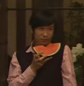

1：新志对于柯哀到底意味着什么？
2：青山按目前的进度有能力写到新志吗？
3：新志本身是否构成对柯哀的否定？
4：兰和步美是否是对标新一和柯南必将BE的两端情感？
5：如果柯南是靠回到过去实现和新一的统一，那么灰原哀靠什么？
2：青山按目前的进度有能力写到新志吗？
3：新志本身是否构成对柯哀的否定？
4：兰和步美是否是对标新一和柯南必将BE的两端情感？
5：如果柯南是靠回到过去实现和新一的统一，那么灰原哀靠什么？
以上是我在写新志的时候脑袋里冒出来的疑问，欢迎各位畅所欲言。
2023-11-12 09:59 | 南英的茶馆:感谢各位的讨论和意见交流，现阶段我悟到的总结在56楼。欢迎查看。2023-12-22 05:18 | 贴吧用户_aAJtN8y:爱你，南南2024-01-27 08:13 | leo0810:原著架构下新志比柯哀难写是必然，柯哀能成为经典就在其二人奇妙的相处模式，柯南越界而不自知，灰原自知而不越界，两人的默契与亲密由孩童身体作为前提，这种相处如果换成新志成年体就必然会带来性意识的暧昧，除非游走在道德之外否则只能进退两极化处理，而原著柯哀那般氛围就难以复刻了
1.新志的出现对于柯哀其实应该算量变到质变的转变了，毕竟在朝夕相处的日子里一点点累计的过去都会在某一时刻变成未来
2.能不能写到满悬的，毕竟年纪大了，那么多暗线还没回收，真的很怕青山早死
3.新志应该算按辩证唯物主义看应该算否定之否定吧，大人变小孩，小孩再变大，不断地对从前进行“否定”（工藤新一变成江户川柯南再由江户川变成工藤）“然后一起在走向更高处成为更好的自己。我一直觉得江户川柯南和灰原哀都是工藤新一和宫野志保生命的一部分，或者说工藤新一和宫野志保是江户川柯南和灰原哀生命继续延续下去的一种方式。
2.能不能写到满悬的，毕竟年纪大了，那么多暗线还没回收，真的很怕青山早死
3.新志应该算按辩证唯物主义看应该算否定之否定吧，大人变小孩，小孩再变大，不断地对从前进行“否定”（工藤新一变成江户川柯南再由江户川变成工藤）“然后一起在走向更高处成为更好的自己。我一直觉得江户川柯南和灰原哀都是工藤新一和宫野志保生命的一部分，或者说工藤新一和宫野志保是江户川柯南和灰原哀生命继续延续下去的一种方式。
2023-11-12 02:03 | 南英的茶馆:都是一个名字，总感觉新志要写出高于旧新志和超越柯哀小孩形象的味道好难啊,,,2023-11-12 02:05 | 南英的茶馆:我感觉都快是一部新作品了，如果只用新志完结的话，作品的生命力会断。我觉得很可能像楼下兵长头像说的，拿新志蜻蜓点水在结局之前的剧情里统一认知，事实上以柯哀继续走下去（可能开放式结局2023-11-12 02:50 | windhalf:回复 南英的茶馆 :柯哀有幼童伪装，柯子可以肆无忌惮，你看新一有对毛利兰动手动脚过？？对灰原可是日常拉手搭肩还抓着不放2023-11-15 11:27 | 顾三岁🍀:回复 南英的茶室 :因为柯哀现在的外在形态都是小孩，现在他们俩之间所展现出来的是一种精神同频，灵魂共振的精神恋爱，讲白了柏拉图式爱情。2023-11-15 11:27 | 顾三岁🍀:回复 顾三岁🍀 :但是一旦成为新志就不一样了，十七八岁少男少女，不谈荷尔蒙和性张力简直就是在耍流氓，所以平衡好精神层面的那种纯粹性和性张力就很难，很考验笔力，说实话，我觉得老贼画不出来。2023-11-15 11:41 | 顾三岁🍀:回复 南英的茶馆 :其次，关于小兰和步美，工藤和江户川，之间对应其实很有意思。在工藤变小之前，毛利兰其实已经对工藤新一做了一定程度的“神话”了。2023-11-15 11:41 | 顾三岁🍀:回复 顾三岁🍀 :毛利在追逐着的是她眼里理想的新一，这个工藤新一身上环绕着毛利兰给他带上的虚假光环，他们俩按照设定在江户川（工藤新一作为假像的存在）出现以前就在他们真切地相处了十几年，但她却在真实的存在里她追寻一种“假”。2023-11-15 11:44 | 顾三岁🍀:回复 顾三岁🍀 :但是步美不一样，我觉得她在工藤精心（可能也没那么精心）制造出来的假象里看透了江户川柯南的真。一个在真里找假，最终只会一无所获失望而归，一个在假里找真，但是最后很可能那一点真会被数不清的假淹没。2023-11-17 04:11 | 这俩兄妹啊:回复 顾三岁🍀 :喂喂，新志和平和是同一个年纪吧，怎么一到新志就觉得性张力满满啊2023-11-26 22:21 | 这俩兄妹啊:回复 顾三岁🍀 :你没事吧2023-11-30 22:23 | 这俩兄妹啊:跟狗一样乱咬人？我要不是对家你跪下道歉不？小红书b站同名账号自己去看
上线是看同城观影群有没有拉我结果就看你在这影响心情真恶心人
回复 顾三岁🍀 :柯哀怎么会有你这种听不懂人话，嘴又脏还无理取闹疯疯癫癫的物种2023-12-22 00:41 | 贴吧用户_72SAtXy:大佬

1.感觉新志难写就在于，柯哀的那些暧昧日常要怎么消解呢？都不说牵手这种，如果新志对彼此给对方戴帽子，附耳交代事件，调侃对方这种【柯哀日常】视若不见（实际不可能，小哀比柯南成熟一些，更有边界感）那兰会很尴尬，观众也会很尴尬，毕竟这不是普通朋友该干的事情，党争的所谓平衡会立刻崩溃。而如果两个人特别是新一意识到尴尬其实事更大，这将是他第一次认识到志保是个他需要保持距离的女人（刚好老贼恶趣味设定新一就好她这口，芙纱绘啊还有小乔说的那位忘了名字），那要怎么刻画他们相处呢？
换句话说新志一出现两个人出现距离感也好，没有距离感也好，党争肯定是玩不下去了，到目前为止最多也就是一方变大。
5的话涉及一个结局问题，我认为最后大结局可能是小哀给新一戴上眼镜吧，这还是比较理想的了，因为毕竟《名侦探柯南》，应该还是柯南体来完成战斗，只是结局之后再变回新一，然后由宫野完成统一。这是比较理想的情况。
换句话说新志一出现两个人出现距离感也好，没有距离感也好，党争肯定是玩不下去了，到目前为止最多也就是一方变大。
5的话涉及一个结局问题，我认为最后大结局可能是小哀给新一戴上眼镜吧，这还是比较理想的了，因为毕竟《名侦探柯南》，应该还是柯南体来完成战斗，只是结局之后再变回新一，然后由宫野完成统一。这是比较理想的情况。
2023-11-12 01:16 | neon年年:另外小哀其实没有鲜明的自我认知问题，她只有早期对着镜子问那是谁，这也是她能共情柯南的原因之一。认知矛盾也必须要看变大之后对自己看法，小哀鲜有的两次变大都没有过多相关笔墨，个人认为她被柯南前几次鼓励之后想法就变成既来之则安之，后来被少侦博士的爱围绕，应该就想活回18岁少女应有的样子。2023-11-12 01:52 | 南英的茶馆:回复 neon年年 :对，我认为哀对自己的认知是 否定→自我悦纳。但如果走新志线，灰原哀变回去的理由到底是什么呢。柯南变回去的理由是（过去的新一），但过去的新一本身没有灰原哀。这就导致哀的动机指向反而不明，如果只是单纯的作为从属跟着新一变回去，在角色的动机上是居于次位且不明确的。2023-11-12 02:02 | 贴吧用户_5RZ9N4Z:回复 南英的茶馆 :漫画看情人节娃娃和板仓卓案件灰原哀对a药和永生回到过去表现的态度是“愚蠢”，在列车篇灰原的态度更明确“这种药是不该发明出来的”2023-11-12 02:03 | 贴吧用户_5RZ9N4Z:回复 南英的茶馆 :虽然经常说现在的灰原有了三小的陪伴但灰原对三小的态度一直是以一个长辈身份相处，细看他们的相处过程灰原一直教导三小不要依靠他人，在服部给三小出招的那个探险案件中灰原的态度表现的非常明确2023-11-12 02:09 | 贴吧用户_5RZ9N4Z:回复 南英的茶馆 :宫野志保的父母靠开诊所和廉价却效果良好的感冒药行医，却因为乌丸集团的原因死于一场火灾中缘由至今未知；宫野明美小时候在班级经常鼓励同学，时间胶囊里还表示：希望大家的愿望都能实现。然后她死在组织的手里，遗体至今被视为来历不明2023-11-12 02:16 | 南英的茶馆:回复 贴吧用户_5RZ9N4Z :根据早期灰原对药的一些发言，她对现在这个状态是清醒的。但是关键是她真正想做的是什么，这个坑没填就很难猜。万一青山自己都没想好...2023-11-12 02:23 | 贴吧用户_5RZ9N4Z:回复 南英的茶馆 :只能耐心等，羽田浩司案青山拖了这么多年以至于案件里有了科技bug（虽然以前的案件也有就是了）2023-11-12 02:32 | 贴吧用户_5RZ9N4Z:青山说他是很随便的人我现在觉得他还真不是在开玩笑，如果他硬要这样那样画也没法说什么，就拿最新话来说这个案件对主线和感情线可进行的操作很多，但他要走到哪一步只能看他操作了
回复 南英的茶馆 :红修篇工藤新一上热搜如果伏特加看到的话立马就能加速剧情节奏，但画完后的结果就是伏特加琴酒对工藤新一上热搜毫不知情，他真画出了这个结果我也只能按照他的操作路线走，所以说未来谁能预料到呢2023-11-12 03:08 | 贴吧用户_5RZ9N4Z:回复 南英的茶馆 :说青山随便有可能产生误解，我不是说他在平白无故地瞎写，只是他在意的地方和方向可能和读者不太一样。就拿赤楼梦来说如果青山要改正动画组给秀一瞎加台词的错误的话他能进行的操作太多了，然而他选择艾琳娜和玛丽是姐妹写法，他肯定明白这一设定对秀一明美意味着什么但他还是加了2023-11-12 03:16 | 贴吧用户_5RZ9N4Z:回复 南英的茶馆 :青山对柯南的定位从来都不是子供向，老实说重看漫画除去杀人手法和死者惨状我也不觉得柯南漫画是面对小孩的，归根到底现在推测柯南漫画的未来还为时过早，也许真像诹访道彦发博庆祝M26突破百亿所描述的那样：名侦探柯南正走在半路上2023-11-12 04:27 | 令狐小侠00:回复 南英的茶馆 :她自己说过的，“人不能违逆时间的洪流”，换回去就是callback这句话2023-11-12 23:44 | 柳若风✆:回复 南英的茶馆 :我觉得哀的自我悦纳如果是不接受作为宫野志保的过去的自我悦纳，是绝对失败的，如果73想给哀一个完美的结局，应该不会让这种bug存在2023-11-13 10:43 | 没字也行:回复 南英的茶馆 :小哀变回去的理由一开始就给了呀，不要逃避自己的命运（dead for 卖酒家），（爱上新一）。哀只是一张皮，在即将到来的小学2，3，4年级，这张皮（伪装）迟早要掉的。2023-11-17 14:46 | sw48654264:回复 南英的茶馆 :按“人是社会关系的总和”来看，能让灰原选择变回去的应该是宫野家相关的事吧，包括A药这些研究成果，列车篇后宫野家的正面描写突然多了起来，连接了赤井家和降谷零，如果仅仅只是想补全A药背景是不需要这么多笔墨的，我倾向这是73在给灰原选择取回宫野之名而叠加的筹码。2024-02-05 12:31 | fifa高手🌌:高
2 感觉很难。srbe必然伴随着柯南失去过去身份的锚点，除非新志初遇成真并且柯南在这之后对工藤新一重新有强烈的身份认同，以现在柯南对变回新一逐渐麻木的态度，他很难再变回来了。（这次柯南甚至都允许基德暂时代替新一存在，这在之前想都不敢想）
2023-11-12 01:47 | 南英的茶馆:对，我现在就卡在这了。柯南回去的动力是变回新一，而柯哀本身是反新兰线的，如果柯哀成立那么新一回去的动力消失，那么也同时是新志线的衰减。而新一和兰的感情如果无疾而终的转进柯哀线，本身是一种懦弱的逃避。2023-11-12 05:57 | 贴吧用户_0Q8721R:回复 南英的茶馆 :同人有一种普遍的解决方法，强烈渴望江户川柯南回归到工藤新一的不是工藤新一，而是宫野志保。是宫野志保怀念当初惊鸿一瞥的工藤新一，渴望他能回到原来的生活。2023-11-12 06:37 | 南英的茶馆:回复 贴吧用户_0Q8721R :我就是这么处理的！①柯南的愿望是事成之后保护好灰原哀希望灰原哀有得选，但心理上想灰原一起走。②灰原哀的愿望是新一顺利回去自己有点犹豫。所以get了一下柯南的意思之后，嘛... 这家伙不说 自己不跟着一起走怕是”没法顺利“回去了...（这样），唯一的问题就是处理三小2023-11-12 06:38 | 南英的茶馆:回复 贴吧用户_0Q8721R :但是考虑到三小的羁绊实际也就大半年，转校又同时转走也不是不行，(只能委屈步美演出了）2023-11-12 06:42 | 贴吧用户_0Q8721R:回复 南英的茶馆 :我觉得你们小瞧三小了。更可能是新志犹豫不决不知道怎么解释的时候，三小一眼认出来这就是小哀和柯南的味道，相信了柯南和小哀是假面超人，做了拯救世界的大事之后恢复了原来的身份。而且也不存在失落，毕竟友情是不会因为外貌和时间而改变的。2023-11-12 06:49 | 南英的茶馆:回复 贴吧用户_0Q8721R :雀实...好想法，截图记下来了。下意识的想拿步美祭哭戏...（我有罪）2023-11-12 07:01 | 贴吧用户_0Q8721R:回复 南英的茶馆 :毕竟是住鬼屋的大哥哥和小木屋的大姐姐嘛……等一下啊，快去给我更视频啊！（锤）2023-11-12 14:02 | 肉鸡214:确实，哀对恢复志保其实没太大意愿，除非有强烈的动机，所以新志线基本断着。而且哀比起变大，现在的人生线更完整，变大除了那个研究老若识别的，基本就没人了。她的羁绊除了柯南，最大的来源就是博士和三小。然后是m26，她道别的是柯南，不是工藤。所以我觉得柯南的身份对她来说更重要。所以回归到
1.性冲动带来的原始渴望和两人理性思维的进一步对撞。如果要形容一下的话就是将宝藏的钥匙直接放到两人的面前。迫使两人不得不去注意到这把钥匙。
2.不知道
3.不能，如果讨论过去，那柯哀是新志的继承，如果讨论未来，那新志只会是柯哀的延续。
4.不能对标。二者只是存在一定的相似但并不相同。
5.如果让我来说的话，灰原哀和宫野志保本身并没有分裂，因此不需要重新统一。而如果认为产生分裂的话，那么和过去的自己达成和解，这是灰原哀和宫野志保重新统一的关键。
2.不知道
3.不能，如果讨论过去，那柯哀是新志的继承，如果讨论未来，那新志只会是柯哀的延续。
4.不能对标。二者只是存在一定的相似但并不相同。
5.如果让我来说的话，灰原哀和宫野志保本身并没有分裂，因此不需要重新统一。而如果认为产生分裂的话，那么和过去的自己达成和解，这是灰原哀和宫野志保重新统一的关键。
2023-11-12 02:35 | 冰洁圣天:话说这个讨论的目的是侧重于哪个方向的2023-11-12 03:04 | 南英的茶馆:？是同人作品的创作，还是未来走向预测？没搞太清楚。
回复 冰洁圣天 :在尽可能不ooc的想法下写同人的时候延申出来的疑问，讨论哪边都可以
1、新志是另一种形态的柯哀，是被扭曲的人生重回正轨。
2、不好说
3、不构成。他们甚至不需要重塑人际关系。如果说幼新志是两人命运的起点，之后命运将他们硬生生扯开，柯哀只是对他们失去的青梅竹马的可能的补偿，他们终究还是会回到新志这个命定的正轨。
4、不知道
5、成为银色子弹击溃组织，才能整合她的理想自我和真实自我。
2、不好说
3、不构成。他们甚至不需要重塑人际关系。如果说幼新志是两人命运的起点，之后命运将他们硬生生扯开，柯哀只是对他们失去的青梅竹马的可能的补偿，他们终究还是会回到新志这个命定的正轨。
4、不知道
5、成为银色子弹击溃组织，才能整合她的理想自我和真实自我。
2023-11-12 01:56 | 南英的茶馆:1的前半句没问题，后半句回归正轨涉及到新哀的问题，宫野志保的前半生是大段空白，除非真拿出初遇论砸磁石，否则哀回去的动机不太明确。5中提到的理想和真实自我又是另外一个大坑，a药真实的目的一直没有直接写清楚，万一目标很搞笑或者保持悬念写成类似于不可知的”终极“，都会给新志创个大的。2023-11-12 02:04 | 贴吧用户_0Q8721R:回复 南英的茶馆 :我认为江户川柯南和灰原哀都只是一个虚假的身份，可以视作一个“梦境”，工藤新一和宫野志保才是真实存在的人，只不过现在对宫野志保的介绍太少，以至于我们把灰原哀当成了那个更真实的人。我希望到最后，他们会回到自己真实的身份、真实的身份之中。2023-11-12 02:09 | 南英的茶馆:回复 贴吧用户_0Q8721R :如果是电影or系列连续剧，假身份＋梦是扛得住情绪流的。但柯南20余年，这个梦太扎实了，而且名柯到现在关于梦的虚幻感最多的其实是落在新兰身上的兰方的，青山应该不会用梦来在后期打马虎眼。（危命篇新一看三小离开那里有不真实的描写，前期干过后期应该是脱虚入实）2023-11-12 02:17 | 贴吧用户_0Q8721R:回复 南英的茶馆 :并不是说这段经历只是一场梦，而是说这段经历“就像一场梦”，包括到最后黑衣组织彻底消失，很可能也不会为大众所知晓，只是作为少数人知道的秘密。当然，这段经历对现实的影响是必然存在的，只不过秘而不宣罢了。
1：新志对于柯哀到底意味着什么？
双方对于对方在理性与感性的进一步认识，对柯子来说，这位推翻了他以往对于女性认知的“那位女士”，他无法再打马虎眼，也无法视而不见，他要确实地用男人看待女人的观点来看待志保。
双方对于对方在理性与感性的进一步认识，对柯子来说，这位推翻了他以往对于女性认知的“那位女士”，他无法再打马虎眼，也无法视而不见，他要确实地用男人看待女人的观点来看待志保。
2023-11-12 01:55 | 贴吧用户_0CEt5VS:我把五条都回复了，为什么只能看到一条啊？？2023-11-12 01:57 | 南英的茶馆:回复 贴吧用户_0CEt5VS :可能出现什么系统bug了吞楼，正常...贴吧就这鬼样子2023-11-12 02:01 | 贴吧用户_0CEt5VS:问题是我是一起回复的，怎么就剩第一部分了…
我想从哀的角度分析一下，世界上没有人再等宫野志保，但作为灰原哀，她有柯南，有博士，有三小只，这些人温暖了她，让她从被组织追杀的背叛者变成安心追星的少女。
她的童年曾经笼罩在组织的阴影下，前半生致力于a药的研发，我相信她会利用这次A药让她回溯到从前的机会，重新找回自己的童年。
我柯也是一样的，与兰的感情是工藤新一最后的执念，如果srbe，他应该会像红修篇里一样确定自己柯南的身份。
个人感觉，新志只会是最后的杀手锏，在与组织的对决中俩人完成关系的确认，然后继续以柯哀的形式相处下去，只不过这一次，会是解除冻龄一起长大，这才是真正的青梅竹马。
她的童年曾经笼罩在组织的阴影下，前半生致力于a药的研发，我相信她会利用这次A药让她回溯到从前的机会，重新找回自己的童年。
我柯也是一样的，与兰的感情是工藤新一最后的执念，如果srbe，他应该会像红修篇里一样确定自己柯南的身份。
个人感觉，新志只会是最后的杀手锏，在与组织的对决中俩人完成关系的确认，然后继续以柯哀的形式相处下去，只不过这一次，会是解除冻龄一起长大，这才是真正的青梅竹马。
2023-11-12 02:01 | 南英的茶馆:赞同猜想，以身份名称确认前后关系，又再次退回。这个结局其实是符合作品和商业两方面考虑的（新志脸大概率不如柯哀形象好卖，而且柯哀可以在作者走后续写。），那么到这里新兰感情的处理就很重要了...，其实我写到这里越来越发现，在很多柯哀同人文里兰的形象实际上都是比原作要好很多的。2023-11-12 02:02 | 南英的茶馆:大概率是因为按逻辑写文的大家都认为新兰炸的太难看影响柯哀吧...2023-11-12 02:13 | ifbyoru365:回复 南英的茶馆 :我希望主线完结后可以出一部电影，开局就是10年后，然后从新志俩人的婚礼入手，就像哆啦a梦2 伴我同行一样，然后名柯继续以单元剧的形式连载下去。甚至于如果再大胆一点可以直接拆出两部番，一部是柯哀俩人青梅竹马的校园爱情，一部是二十年后的米花町2023-11-12 02:15 | ifbyoru365:拜托，我以前还要喊新一哥哥，现在已经要改口工藤老弟了，再拖就要喊毛利老弟了，真的很想看一下二十年后的米花町2023-11-12 02:31 | 南英的茶馆:回复 ifbyoru365 :阿笠老弟考虑一下2023-11-12 02:36 | 贴吧用户_GG62aA7:不敢苟同，难道“没有活人在等宫野志保”就足以支撑她放弃宫野志保，这个她无比珍视却已不在世的家人们留给她的最后的珍贵礼物，逃避作为宫野志保的命运吗？2023-11-12 02:48 | ifbyoru365:回复 贴吧用户_GG62aA7 :看你怎么理解志保的命运了，我的理解是像妈妈和姐姐期待地那样勇敢地活下去，去学会爱别人和被爱。既然a药给了她一次机会，让她有机会去弥补失去的童年，为什么不呢？难道非要她抱着医学博士的头衔不放，推开身边所有人去专注于事业吗？这不是琴酒干的事吗？2023-11-12 02:53 | ifbyoru365:回复 贴吧用户_GG62aA7 :我觉得哀这个角色的成长就在于从最初的生人勿扰到后来的阳光活泼，在这个过程中她学会了爱，去爱柯南，去爱博士，去爱三小只，甚至去爱小动物，去爱足球，去爱包包，同时她也收获了爱，这是我最喜欢她的一点2023-11-12 03:35 | 贴吧用户_GG62aA7:回复 ifbyoru365 :窃以为变回宫野志保不意味着与事业绑死，也不意味着失去灰原哀所拥有的一切，更不是与爱人和被爱不兼容。重过童年似乎不错，但又该如何理解“人不能违背时间的潮流”呢？其实说到底，还是要看哀心里对宫野志保这个本体的认知与理解。2023-11-12 03:55 | ifbyoru365:回复 贴吧用户_GG62aA7 :比较好奇你对宫野志保的命运的理解。关键是怎么和不知道组织存在的其他人解释灰原哀和柯南的突然消失呢？是谎称出国然后就再也没联系了or坦白从来就没有哀和柯南（相当于告诉别人他俩死了，这个太刀了），这些坑都要填2023-11-12 03:59 | ifbyoru365:回复 贴吧用户_GG62aA7 :人不能违背时间的溯流，运动相对应的不就是静止吗，我对违背的理解就是像现在这样停滞在7岁，永葆青春呗。那解除冻龄一起长大也不算违背时间吧，最终还是会长大。我真心希望哀能有一个美好的童年2023-11-12 04:19 | 贴吧用户_GG62aA7:回复 ifbyoru365 :这只能看73的意思了，留白和回旋余地都很大2023-12-26 12:54 | 贴吧用户_G315e5P:回复 贴吧用户_GG62aA7 :我发现青山聪明得很，挖了坑，但这些坑都有其他的解读，对他也很好写一些
1. 新志就是柯哀，柯哀就是新志；倘若二者的爱欲因为外型的改变而产生了“柯哀状态下未曾谋面的冲动”，那么这种冲动引发的隔裂事实上象征着同人文与原著的决裂
2. 建议问青山本人
3. 如1
4. 在我这里，兰和步美都是传统男性主义主视角下的“传统女子”——阳光、率真、可爱balabala，但最为重要的，则是依附关系：没有新一，没有兰出场的必要；没有柯南，没有步美出场的必要；这一点青山也画的很明白了，只不过兰的依附是显明的，而步美的依附躲藏于孩童的外表之下
5. 我不明白这个前提与灰原-志保的合一有什么关系；灰原哀与宫野志保的统一根据原著的惯性，首先要解决银色子弹的命中这一条件，实现双重身份的复仇；其次再怎么发挥都是同人作者的脑洞——灰原哀恰恰是因为接受了宫野志保这一身份，才没有接受证人保护计划，才没有逃避自己的命运，所以作者只需要让银弹命中某个目标即可
2. 建议问青山本人
3. 如1
4. 在我这里，兰和步美都是传统男性主义主视角下的“传统女子”——阳光、率真、可爱balabala，但最为重要的，则是依附关系：没有新一，没有兰出场的必要；没有柯南，没有步美出场的必要；这一点青山也画的很明白了，只不过兰的依附是显明的，而步美的依附躲藏于孩童的外表之下
5. 我不明白这个前提与灰原-志保的合一有什么关系；灰原哀与宫野志保的统一根据原著的惯性，首先要解决银色子弹的命中这一条件，实现双重身份的复仇；其次再怎么发挥都是同人作者的脑洞——灰原哀恰恰是因为接受了宫野志保这一身份，才没有接受证人保护计划，才没有逃避自己的命运，所以作者只需要让银弹命中某个目标即可
2024-01-27 11:31 | 顽皮鬼才:步美是为了哀设计的，绑定的人是哀
2：青山按目前的进度有能力写到新志吗？
肯定能，但写到新志之后没法立刻完结啊，不然在主线之外的人（比如三小只和兰）看来是灰原哀和柯南突然消失，这个坑得填。作品名是名侦探柯南，自然是以柯哀二人为锚点。
俩人在决战中以新志形态首次见面并告白作为爱情的起点，重新吃药变成柯哀，再一起长大到新志的形态，这也算是一种轮回吧。
肯定能，但写到新志之后没法立刻完结啊，不然在主线之外的人（比如三小只和兰）看来是灰原哀和柯南突然消失，这个坑得填。作品名是名侦探柯南，自然是以柯哀二人为锚点。
俩人在决战中以新志形态首次见面并告白作为爱情的起点，重新吃药变成柯哀，再一起长大到新志的形态，这也算是一种轮回吧。
2023-11-12 02:13 | 南英的茶馆:能...吗？快给我画！！！！！！！！！！！！！！！！！！
关于最后一个问题，如果一开始灰原和宫野没有割裂，就没有统一这一说了。柯南和新一为什么割裂，主要就是两个身份的社会关系不一样，然后两个身份的切换就变得不自然。而灰原和宫野志保的社会关系有没有变化呢？有非常大的变化，但灰原的两种社会关系冲突吗？并不冲突，反而是她成长的象征。
1：新志对于柯哀到底意味着什么？
双方对于对方在理性与感性的进一步认识，对柯子来说，这位推翻了他以往对于女性认知的“那位女士”，他无法再打马虎眼，也无法视而不见，他要确实地用男人看待女人的观点来看待志保。
2：青山按目前的进度有能力写到新志吗？
不够，因为上帝视角安排的东西太多，一一揭露需要很长的时间，新兰甚至还没结束。
3：新志本身是否构成对柯哀的否定？
不够成，是柯哀的延伸，以及独一无二的新阶段
4：兰和步美是否是对标新一和柯南必将BE的两端情感？
应该不行，对于步美来说柯南是真实但虚假的单恋，而对于兰来说更像是虚假但真实的恋爱错觉。
5：如果柯南是靠回到过去实现和新一的统一，那么灰原哀靠什么？
我觉得柯南和新一的统一也不是靠回到过去实现的…也许我没理解楼主的意思
双方对于对方在理性与感性的进一步认识，对柯子来说，这位推翻了他以往对于女性认知的“那位女士”，他无法再打马虎眼，也无法视而不见，他要确实地用男人看待女人的观点来看待志保。
2：青山按目前的进度有能力写到新志吗？
不够，因为上帝视角安排的东西太多，一一揭露需要很长的时间，新兰甚至还没结束。
3：新志本身是否构成对柯哀的否定？
不够成，是柯哀的延伸，以及独一无二的新阶段
4：兰和步美是否是对标新一和柯南必将BE的两端情感？
应该不行，对于步美来说柯南是真实但虚假的单恋，而对于兰来说更像是虚假但真实的恋爱错觉。
5：如果柯南是靠回到过去实现和新一的统一，那么灰原哀靠什么？
我觉得柯南和新一的统一也不是靠回到过去实现的…也许我没理解楼主的意思
2023-11-12 02:12 | 南英的茶馆:否定并不指向否认，新阶段的开启意味着旧有形态的结束，形象的结束需要必须的理由来否掉柯哀形象的持续动力，我认为即使是延申也是对柯哀不可逆的否定。2023-11-12 02:12 | 南英的茶馆:否定并不指向否认，新阶段的开启意味着旧有形态的结束，形象的结束需要必须的理由来否掉柯哀形象的持续动力，我认为即使是延申也是对柯哀不可逆的否定。2023-11-12 02:47 | 贴吧用户_0CEt5VS:回复 南英的茶室 :我看看能不能发出来，刚才怎么都发送失败2023-11-12 02:49 | 贴吧用户_0CEt5VS:回复 南英的茶馆 :靠，能发了。我明白楼主的意思了，柯南有强烈的再成为新一的冲动，而这种冲动的锚点是兰;如果新兰pass了，柯南就需要新的成为新一的锚点，也许新志初遇是唯一的新理由。2023-11-12 02:49 | 贴吧用户_0CEt5VS:回复 南英的茶馆 :毕竟她两次亲手斩/断了工藤新一与锚点的链接（一次是把工藤新一的状态改成死/亡，一次是在医院给了柯南三个选择）。解铃换需系铃人，只有如此。2023-11-12 02:54 | 贴吧用户_0CEt5VS:回复 南英的茶馆 :至于现在新志的写法，我现在确实想不出应该是什么样的，因为这更像是一个后日谈的结果。2023-11-12 02:59 | 南英的茶馆:回复 贴吧用户_0CEt5VS :好耶！被get到了2023-11-12 03:00 | 南英的茶馆:回复 贴吧用户_0CEt5VS :给你康康我写的后日谈https://nanying734.lofter.com/post/1e8ec1f0_2ba7f6d162023-11-12 03:01 | 南英的茶馆:回复 贴吧用户_0CEt5VS :(=・ω・=)2023-11-12 04:05 | 贴吧用户_0CEt5VS:回复 南英的茶馆 :看完了，看了三遍，但是还是这句话，确实感觉怪，怪就怪在没有先例，如果要原作的醍醐味就太难了，等到后日谈的时候，新和志到底用什么态度去面对对方，肯定不能用m5同框的时候来看了，甚至m26之前之后也是两个不同的样子了。2023-11-12 05:05 | 冬馬和紗℃:回复 贴吧用户_0CEt5VS :前面的樓層看的有點暈，到你這看懂了2023-11-12 09:43 | 南英的茶馆:回复 贴吧用户_0CEt5VS :我在回复后面楼层的过程中突然反应过来一件事。新志本身可以代表结局了...他既终结了新柯代表的日常线 兰和三小，也代表了灰原哀不用隐藏 组织案件结束 以及一连串主线人物去到对应的位置.... 用什么样的姿势去结局，在目前一堆大坑的作品里是很难写清楚的。2023-11-12 10:08 | 贴吧用户_0CEt5VS:回复 南英的茶室 :就是这样，新志是结果，而这种结果最终的形态完全没有任何依照，从堤无津川的歌曲名“就不告诉你”，到时光胶囊的“我也是第一次听说啊”，到128封邮件的絮絮叨叨，2023-11-12 10:09 | 贴吧用户_0CEt5VS:回复 南英的茶馆 :徽章通信哀故意不回答柯还慢悠悠撩头发就是要让他担心的有恃无恐，柯子两个电话都给哀道歉的体贴，到你问我在听什么，我直接耳机摘下来塞你耳朵里的宠溺，还有绝对的眼镜超人名场面复刻，2023-11-12 10:09 | 贴吧用户_0CEt5VS:回复 南英的茶馆 :给人的感觉是他们两个的亲昵好像还在加速，回到角色的话，柯子希望哀变成什么样，将会决定新志对视的时候，这种离谱的延长线到底在哪，根本就意想不到，恐怕必须要青山刚昌画出一条线才知道了。
一会看比赛了，大家楼里接着聊，不要吵架。
其实说到底都是刚子画的太慢了........真烦。

2023-11-18 07:03 | 夜瞳秒:感觉快了，一般65以后就握不稳笔啦……
我觉得新志难写的原因是“原作里没有对两人形象的描写”，换句话说追求原著向又想写新志是无米之炊。
志几乎没有描写，新每次出现几乎都伴随着兰，导致看起来比柯还幼稚…但实际上的新肯定在经历了这些事之后应该成长了很多才对。
而这些问题里，我猜最重要的其实是5，也就是“灰原哀变回宫野志保的理由”。这个先画靶子后射箭（以写新志为前提去找理由）的话其实也是能找到的：也就是宫野志保这个名字本身。作为父母和姐姐给她留下的唯一之物，她对此珍惜也是很合理的。另一点就是大人的身份会更方便她科研。
…当然从故事推进角度这么写确实有些勉强，这其实也是我觉得原作结尾会是柯哀结局而非新志结局的原因。
志几乎没有描写，新每次出现几乎都伴随着兰，导致看起来比柯还幼稚…但实际上的新肯定在经历了这些事之后应该成长了很多才对。
而这些问题里，我猜最重要的其实是5，也就是“灰原哀变回宫野志保的理由”。这个先画靶子后射箭（以写新志为前提去找理由）的话其实也是能找到的：也就是宫野志保这个名字本身。作为父母和姐姐给她留下的唯一之物，她对此珍惜也是很合理的。另一点就是大人的身份会更方便她科研。
…当然从故事推进角度这么写确实有些勉强，这其实也是我觉得原作结尾会是柯哀结局而非新志结局的原因。
2023-11-12 02:42 | 南英的茶馆:就是就是（怨念），我觉得新志文是超越现在柯哀结构的新写法，而原作根本没有新志描写，稍微写几笔就会ooc...
个人感觉哀如果变大就是为一开始吃药想自杀逃避的一种回应，哀再次吃药就说明她可以告诉以前的自己现在已经有不再逃避的勇气
思索了一会有点不好回答，我先想想再说
2023-11-12 02:40 | 南英的茶馆:搓搓
1：新志对于柯哀到底意味着什么？
柯哀是打情骂俏，新志是干柴烈火。
我觉得在srbe之后，
唯一能hold得住小柯的就是小哀这个小女孩的身体了，
比如之前抢药那次，如果换成新志俩人共处一室，，，，，不敢想不敢想"o((>ω< ))o"
建议如果有要写新志文的，请不要单纯地从柯哀出发，小孩子顶多拉拉手，斗斗嘴，上限就在那摆着，大孩子就不一定了。
看看m26打败了多少柯哀同文，我现在再看竞渡河都为新一居然能忍兰十年而震惊，
新志一出起码是奔着高佐那一对去的，太保守了反而不好。
而且可以利用新志和柯哀的身份上的反差制造性张力，
比如志保x小柯，利用志保大人的身体来强化她的女王和傲娇属性，安排志保利用身高优势调戏小柯的剧情，有了踢我一脚(✿✪‿✪｡)ﾉ
柯哀是打情骂俏，新志是干柴烈火。
我觉得在srbe之后，
唯一能hold得住小柯的就是小哀这个小女孩的身体了，
比如之前抢药那次，如果换成新志俩人共处一室，，，，，不敢想不敢想"o((>ω< ))o"
建议如果有要写新志文的，请不要单纯地从柯哀出发，小孩子顶多拉拉手，斗斗嘴，上限就在那摆着，大孩子就不一定了。
看看m26打败了多少柯哀同文，我现在再看竞渡河都为新一居然能忍兰十年而震惊，
新志一出起码是奔着高佐那一对去的，太保守了反而不好。
而且可以利用新志和柯哀的身份上的反差制造性张力，
比如志保x小柯，利用志保大人的身体来强化她的女王和傲娇属性，安排志保利用身高优势调戏小柯的剧情，有了踢我一脚(✿✪‿✪｡)ﾉ
2023-11-12 04:21 | 诗墨羽🌀:柯志剧情啊，志保利用身高优势调戏小柯，可以看前段时间lofter上柳啦哆更新的【柯哀】中篇 深海 第37章志保的反击，这篇写的很棒
新志要是同框，意味着主线剧情基本已经到大结局阶段了。毕竟柯手上只有唯一的一粒解药，吃了肯定是非常特殊的情况。而灰原变大只可以严重威胁到自己或者周围人生命的环境，两个双双变大几乎是只能用大人形态才可能突破的绝境。
其次，没有幼童形态的伪装，这两人互动估计真要出事，柯子可是真敢上手的。估计变大后习惯性动作一来，要是毛利兰在场，估计老贼肯定给你来个真人版加强2.0
其次，没有幼童形态的伪装，这两人互动估计真要出事，柯子可是真敢上手的。估计变大后习惯性动作一来，要是毛利兰在场，估计老贼肯定给你来个真人版加强2.0
2023-11-12 03:09 | 南英的茶馆:赞同，新志同框安安稳稳的日常写不了，肯定是什么极端大场面让这两人形象名称统一。我预设的是志保独走（列车篇），新一开大号在志保意想不到的情况下上线。2023-11-12 03:27 | windhalf:回复 南英的茶馆 :2023-11-12 04:05 | ifbyoru365:真想看他们的日常啊。大概率是有希子和优作的模式。雪山篇有希子对优作的描述和志保对新一的一样。有空希望你能分析下
回复 windhalf :可以出一部电影，开局就是10年后，然后从新志俩人的婚礼入手，就像哆啦a梦2 伴我同行一样，然后名柯继续以单元剧的形式连载下去。甚至于如果再大胆一点可以直接拆出两部番，一部是柯哀俩人青梅竹马的校园爱情，一部是二十年后的米花町
以下只是我个人的想法
1.新志是柯哀的延续，也是对「过去的新志」的更新，是柯哀感情理性与感性的进一步认知，是纯白纯黑被绑到只有他们所知道的灰色的消弭和解，是对他们这场人生变故的扭转
拿假面骑士举例，柯哀是基础→最终这一整段的进化过程，新志是限定特殊，大变动/大结局时候唯心力量迸放的形态（这种形态外貌上大多是跟基础一样或者是换皮）
2.不好说，因为这个过程会很长，必须要在漫画里经历几个大事件，其中还必然伴随新兰的解构和刚变成新志的不适应，按目前这个休刊进度，我比较担心73的身体，以及最大的问题，哀想做的药到底是什么，这既影响主线的深度，又影响恋爱线整个拆解新兰到柯哀明意这个过程的高度
3.不构成，如第一点所说，新志是柯哀的延续，它否定的是曾经的“新一”和“志保”
4.狭义角度来说，是的；广义角度来说是从爱情观对撞，注定了有些情感会BE；恋爱推理恋爱推理，应该得是要有柯南想要什么样的情感，那几个喜欢柯南/新一的姑娘是想要什么样的情感，爱情观对撞撞出最合适的，而有冲突的甚至南辕北辙的，就注定会BE了
5.这只是我的一个暴·论，靠与命运战斗
命运共同体，不幸的命运中你与我同在，这都表明柯哀二人的命运是被扭曲了的
哀曾经也说过“人类是不能违逆时光的洪流，若要刻意扭转它的话，就会受到惩罚”
那么柯哀代表与命运和解，避免了惩罚，开拓新的未来
新志代表和命运作战，然后赢了这场作战，重新接续被扭转了的命运
当然这个也受第二点说的真·银弹的影响，不然这个和命运战斗就太小打小闹了
1.新志是柯哀的延续，也是对「过去的新志」的更新，是柯哀感情理性与感性的进一步认知，是纯白纯黑被绑到只有他们所知道的灰色的消弭和解，是对他们这场人生变故的扭转
拿假面骑士举例，柯哀是基础→最终这一整段的进化过程，新志是限定特殊，大变动/大结局时候唯心力量迸放的形态（这种形态外貌上大多是跟基础一样或者是换皮）
2.不好说，因为这个过程会很长，必须要在漫画里经历几个大事件，其中还必然伴随新兰的解构和刚变成新志的不适应，按目前这个休刊进度，我比较担心73的身体，以及最大的问题，哀想做的药到底是什么，这既影响主线的深度，又影响恋爱线整个拆解新兰到柯哀明意这个过程的高度
3.不构成，如第一点所说，新志是柯哀的延续，它否定的是曾经的“新一”和“志保”
4.狭义角度来说，是的；广义角度来说是从爱情观对撞，注定了有些情感会BE；恋爱推理恋爱推理，应该得是要有柯南想要什么样的情感，那几个喜欢柯南/新一的姑娘是想要什么样的情感，爱情观对撞撞出最合适的，而有冲突的甚至南辕北辙的，就注定会BE了
5.这只是我的一个暴·论，靠与命运战斗
命运共同体，不幸的命运中你与我同在，这都表明柯哀二人的命运是被扭曲了的
哀曾经也说过“人类是不能违逆时光的洪流，若要刻意扭转它的话，就会受到惩罚”
那么柯哀代表与命运和解，避免了惩罚，开拓新的未来
新志代表和命运作战，然后赢了这场作战，重新接续被扭转了的命运
当然这个也受第二点说的真·银弹的影响，不然这个和命运战斗就太小打小闹了
就不能新哀吗，17岁少年和7岁少女的拉扯 ，希望同人多写新哀
，希望同人多写新哀
，希望同人多写新哀2023-11-12 02:55 | ifbyoru365:柯志，我要看志保女王调戏小柯2023-11-12 02:56 | 贴吧用户_0CEt5VS:新哀是吧，真刑啊，搜查一课雅座一位2023-11-12 03:06 | 南英的茶馆:支持秀一正义砸门，FBI! OPEN THE DOOR!2023-11-12 03:09 | 随意♬飘荡:新哀好耶，特别是未成年小哀x新一才最好嗑，等到小哀成年就和新志一样了2023-11-12 03:50 | 贴吧用户_QDEK193:回复 南英的茶馆 :然后秀哀2023-11-12 10:14 | 解毒剂😄:赤井秀一赤井玛丽：当我们死了吗2023-11-13 22:49 | Pellow🐼:新哀，志柯都行，可能后来入粉ca看的二创 ，新志为虐而虐二创太多，新志啊，不是很对味，读者认识灰原哀，宫野志保的人生留白，可能是黑色的，不套皮青春恋爱的优秀新志二创相对少啊。
1、他们自己眼里的自己从来都没有过别的身份。
2、有。为啥都觉得60岁年龄大了，60岁换我们这儿刚到退休年龄……他90+的父亲今年都能陪他去访谈。能通宵打游戏游乐园上过山车……他身体好得很。
3、不是。
4、不是。
5、江户川柯南不靠过去实现和工藤新一的一统，他不需要一统，灰原哀同理。新柯也好，志哀也好，不认为有任何割裂产生。
2、有。为啥都觉得60岁年龄大了，60岁换我们这儿刚到退休年龄……他90+的父亲今年都能陪他去访谈。能通宵打游戏游乐园上过山车……他身体好得很。
3、不是。
4、不是。
5、江户川柯南不靠过去实现和工藤新一的一统，他不需要一统，灰原哀同理。新柯也好，志哀也好，不认为有任何割裂产生。
2023-11-16 06:16 | 露滴💧7532:在国内60岁就想退休？想的真美啊你2023-12-30 09:28 | KaitouKuroba:好家伙，老贼居然60岁通宵打游戏，真怕他没画完就提前嘎了
还是新哀好嗑
新志目前的剧情还不能让他们在阳光下长期相处，所以可能要设置另一时间线或者换个背景。
我记得73说过自己把结尾画好了（不确定），如果他想他就能写，而且现在没人能阻止。哪怕写，感觉最后还是会回到柯哀。
新志本身属于原本的正常态，柯哀才是特殊态，但根据作品标题以及剧情，我倾向柯哀属于特殊化后的稳定态。适应小孩身份+有值得珍惜的羁绊（少侦）。
兰和步美我不好说。
我记得73说过自己把结尾画好了（不确定），如果他想他就能写，而且现在没人能阻止。哪怕写，感觉最后还是会回到柯哀。
新志本身属于原本的正常态，柯哀才是特殊态，但根据作品标题以及剧情，我倾向柯哀属于特殊化后的稳定态。适应小孩身份+有值得珍惜的羁绊（少侦）。
兰和步美我不好说。
1、柯哀就是新志
2、新志同框这张藏了这么久，总得打出去吧
3、不是
4、步美不太算，世良可以算小时候的新一，兰可以算对神化新一的滤镜破碎
5、应该是打败组织吧
2、新志同框这张藏了这么久，总得打出去吧
3、不是
4、步美不太算，世良可以算小时候的新一，兰可以算对神化新一的滤镜破碎
5、应该是打败组织吧
我觉得灰原和志保相对分割没有新柯那么严重。
一方面，她自己身为志保时的过去是“不正常”不符合一般小孩成长的。小柯是天之骄子式的了，尽管也没有那么多好朋友。
另一方面，博士和小柯知道她的身份，扮小孩也就是少侦和学校一类的，而少侦温暖了她的心。相比小柯日常就是在事务所和学校伪装，到达博士这边才能卸下。
她要去实现统一，我觉得就是她的名字。哀是为大家牺牲和家人离去的悲伤，爱是宫野一家，博士小柯少侦等对她的爱。
她要珍惜父母姐姐的回忆和遗物就要不忘过去的爱，她剧情上到达博士和小柯身边也是因为她是宫野。她通过哀的身份给自己一个幸福的志保的可能。而这个可能里不需要让她放弃不正常但是也有家人爱的过去，无论是博士还是小柯。
小柯的话，如果是新兰be后开启新执念变大，我觉得要看剧情发展了。如果假死成真，很久一段时间他都没办法。如果是组织彻底破灭，我倾向到时候剧情已经发展到不存在这种可能（耐药性一类的，以及试图自我牺牲救别人的代价）。
一方面，她自己身为志保时的过去是“不正常”不符合一般小孩成长的。小柯是天之骄子式的了，尽管也没有那么多好朋友。
另一方面，博士和小柯知道她的身份，扮小孩也就是少侦和学校一类的，而少侦温暖了她的心。相比小柯日常就是在事务所和学校伪装，到达博士这边才能卸下。
她要去实现统一，我觉得就是她的名字。哀是为大家牺牲和家人离去的悲伤，爱是宫野一家，博士小柯少侦等对她的爱。
她要珍惜父母姐姐的回忆和遗物就要不忘过去的爱，她剧情上到达博士和小柯身边也是因为她是宫野。她通过哀的身份给自己一个幸福的志保的可能。而这个可能里不需要让她放弃不正常但是也有家人爱的过去，无论是博士还是小柯。
小柯的话，如果是新兰be后开启新执念变大，我觉得要看剧情发展了。如果假死成真，很久一段时间他都没办法。如果是组织彻底破灭，我倾向到时候剧情已经发展到不存在这种可能（耐药性一类的，以及试图自我牺牲救别人的代价）。
我觉得也得往周边的朋友亲人方面考虑吧，新一的那边，大部分跟自己有血缘关系或者关系好的都已经知道柯南就是新一，自己失踪这么长时间，学校里除了小兰就没人再来找自己，说明那帮所谓的同学真的都是狐朋狗友，包括园子 （漫画最新一话园子居然公然让小兰给新一戴绿帽）。志保那方面就更加无人了，除了直美，已经没有人还记得宫野志保了。反倒是柯南和小哀，不管是双亲，博士，三小只，警察们，FBI探员，平次基德，大家都认识记得关心柯哀二人，而不是关心新志二人。新志唯一的好处就是能快点在一起，比如阿笠博士说不定可以在六十岁之前抱上外孙，但除了这点没有其他任何好处，而且比起柯哀，新志可以接触的角色也会减少，比如小兰园子，你都已婚人士了总不能还跟前女友接触吧，前女友的闺蜜更不行，但是柯南小哀可以继续做小兰园子的弟弟妹妹，包括小五郎等等，都是新志不方便接触，但是柯哀很方便的角色。所以哪怕出于后续角色登场的问题，我也感觉柯哀的内容要比新志的内容好些太多。
（漫画最新一话园子居然公然让小兰给新一戴绿帽）。志保那方面就更加无人了，除了直美，已经没有人还记得宫野志保了。反倒是柯南和小哀，不管是双亲，博士，三小只，警察们，FBI探员，平次基德，大家都认识记得关心柯哀二人，而不是关心新志二人。新志唯一的好处就是能快点在一起，比如阿笠博士说不定可以在六十岁之前抱上外孙，但除了这点没有其他任何好处，而且比起柯哀，新志可以接触的角色也会减少，比如小兰园子，你都已婚人士了总不能还跟前女友接触吧，前女友的闺蜜更不行，但是柯南小哀可以继续做小兰园子的弟弟妹妹，包括小五郎等等，都是新志不方便接触，但是柯哀很方便的角色。所以哪怕出于后续角色登场的问题，我也感觉柯哀的内容要比新志的内容好些太多。
（漫画最新一话园子居然公然让小兰给新一戴绿帽）。志保那方面就更加无人了，除了直美，已经没有人还记得宫野志保了。反倒是柯南和小哀，不管是双亲，博士，三小只，警察们，FBI探员，平次基德，大家都认识记得关心柯哀二人，而不是关心新志二人。新志唯一的好处就是能快点在一起，比如阿笠博士说不定可以在六十岁之前抱上外孙，但除了这点没有其他任何好处，而且比起柯哀，新志可以接触的角色也会减少，比如小兰园子，你都已婚人士了总不能还跟前女友接触吧，前女友的闺蜜更不行，但是柯南小哀可以继续做小兰园子的弟弟妹妹，包括小五郎等等，都是新志不方便接触，但是柯哀很方便的角色。所以哪怕出于后续角色登场的问题，我也感觉柯哀的内容要比新志的内容好些太多。新志这个组合性张力太强了，写文时很难表现出来
南英大佬的发问果然不一般，引人深思，谈一点个人看法:
1.新志是柯哀的内核，柯哀是新志的外壳。工藤新一与江户川柯南，宫野志保与灰原哀，都是一个人，但两个名字又实实在在代表着两个人的过去与现在。共同经历了如此多的事件，他们都已经不再是过去的他们。一个学会了尊重生命，不再视侦探为游戏，克服了冲动莽撞，一个走出了黑暗的笼罩，恢复了原本该有的少女性格。
2.以m26带给我们的震撼与感动来看，所谓流传多年青山笔力的下降，没活儿整了，只存在于日常的推理案件，在关键时刻还是能有良好表现，相信新志会写到，会有荧幕同框的一天。
3.新志与柯哀一体两面，不存在相互谁否定了谁，更相反是新志的命运羁绊借助两枚枚APTX催生出了柯哀这个外壳。
1.新志是柯哀的内核，柯哀是新志的外壳。工藤新一与江户川柯南，宫野志保与灰原哀，都是一个人，但两个名字又实实在在代表着两个人的过去与现在。共同经历了如此多的事件，他们都已经不再是过去的他们。一个学会了尊重生命，不再视侦探为游戏，克服了冲动莽撞，一个走出了黑暗的笼罩，恢复了原本该有的少女性格。
2.以m26带给我们的震撼与感动来看，所谓流传多年青山笔力的下降，没活儿整了，只存在于日常的推理案件，在关键时刻还是能有良好表现，相信新志会写到，会有荧幕同框的一天。
3.新志与柯哀一体两面，不存在相互谁否定了谁，更相反是新志的命运羁绊借助两枚枚APTX催生出了柯哀这个外壳。
2023-11-12 09:37 | 南英的茶馆:不算否认这个身份，而是”如果有变成新志的必要”其实是变相的【需要】结束柯哀的身份，毕竟前者是真后者是伪装，而这种结束中内含的【需要】可能会对柯哀两个形象产生消极影响。故事是否一定需要以新志来结束柯哀的模棱两可吗？这种讨论直接关乎结局的高度我认为。2023-11-12 10:44 | 诗墨羽🌀:回复 南英的茶馆 :我是更认同结局为柯哀而非新志，所以我不认为有必要一定用新志来结束柯哀。
后两个问题更难回答，再开一层
4.兰对新一和步美对柯南的感情，存在一定相似，都是被优秀的男孩儿吸引由崇拜与向往开始衍生出来的感情。兰对新一，或许是父爱缺失，导致从小依赖和信任，到现在也没有衰减，甚至不断加强，很多把新一的话视为了信条。而步美对柯南的感情，属于懵懂纯粹的儿童感情，前期表现明显，目前已经较大幅度弱化，反而感觉步哀在不断上分。这两份感情，我认为已经失去了对标的可能。新兰一开始也是双向，但目前看应该会走向BE，给人双方在短时间内带来巨大变化或是成长。而柯步一开始就是单向，更像是随着孩子的成长自然淡化，走向无疾而终，带给人潜移默化的成长。
5.柯南与新一目前确实表现出了一定程度的割裂，从刚变小时新一扮演柯南到清水寺很明显的柯南扮演新一。我认为，单纯恢复身体是无法实现过去与现在的统一，这种割裂虽然是身体引起的，但根源是心理上的。过去柯南想变回去，是怀念高中，怀念能自由破案，不用借助变声器躲在暗中破案，当然毛利兰也是一部分原因，这都是他统一追忆过去的一个个锚点。但现在，他以柯南身份，交到更多朋友，还成功获得了一定程度的警视厅，公安，FBI的指挥权，很大程度恢复了办案的能力，锚点一个个消失，目前最明显的锚点只剩下毛利兰。当这个最后的锚点被拔除，过去的工藤新一以近似消失的形式完全融入到现在的江户川柯南，实现过去与现在的统一。
灰原哀的情况略有不同，她不像柯南一样平时刻意装傻来装成小孩子，大部分时候是以成熟小大人的模样正常展现着自己，除了由于明面上在组织眼里成为死人，摆脱了组织的压力，变得开朗，没有明显的割裂感。她的过去有很多黑暗，所有已知的家人都已去世(赤井家族几位，灰原哀是否知道他们的存在都是存疑的，或许艾莲娜录音带里会告诉一些，但目前还是未知)。对于过去的锚点，或许是组织带来的压迫，当组织彻底被击垮，当她能光明正大的生活在阳光下之时，宫野志保也将与灰原哀统一起来。
他们都需要在恢复身体以后从心理上再度接受现在的自己，然后实现过去与现在的统一。
4.兰对新一和步美对柯南的感情，存在一定相似，都是被优秀的男孩儿吸引由崇拜与向往开始衍生出来的感情。兰对新一，或许是父爱缺失，导致从小依赖和信任，到现在也没有衰减，甚至不断加强，很多把新一的话视为了信条。而步美对柯南的感情，属于懵懂纯粹的儿童感情，前期表现明显，目前已经较大幅度弱化，反而感觉步哀在不断上分。这两份感情，我认为已经失去了对标的可能。新兰一开始也是双向，但目前看应该会走向BE，给人双方在短时间内带来巨大变化或是成长。而柯步一开始就是单向，更像是随着孩子的成长自然淡化，走向无疾而终，带给人潜移默化的成长。
5.柯南与新一目前确实表现出了一定程度的割裂，从刚变小时新一扮演柯南到清水寺很明显的柯南扮演新一。我认为，单纯恢复身体是无法实现过去与现在的统一，这种割裂虽然是身体引起的，但根源是心理上的。过去柯南想变回去，是怀念高中，怀念能自由破案，不用借助变声器躲在暗中破案，当然毛利兰也是一部分原因，这都是他统一追忆过去的一个个锚点。但现在，他以柯南身份，交到更多朋友，还成功获得了一定程度的警视厅，公安，FBI的指挥权，很大程度恢复了办案的能力，锚点一个个消失，目前最明显的锚点只剩下毛利兰。当这个最后的锚点被拔除，过去的工藤新一以近似消失的形式完全融入到现在的江户川柯南，实现过去与现在的统一。
灰原哀的情况略有不同，她不像柯南一样平时刻意装傻来装成小孩子，大部分时候是以成熟小大人的模样正常展现着自己，除了由于明面上在组织眼里成为死人，摆脱了组织的压力，变得开朗，没有明显的割裂感。她的过去有很多黑暗，所有已知的家人都已去世(赤井家族几位，灰原哀是否知道他们的存在都是存疑的，或许艾莲娜录音带里会告诉一些，但目前还是未知)。对于过去的锚点，或许是组织带来的压迫，当组织彻底被击垮，当她能光明正大的生活在阳光下之时，宫野志保也将与灰原哀统一起来。
他们都需要在恢复身体以后从心理上再度接受现在的自己，然后实现过去与现在的统一。
●1：新志对于柯哀到底意味着什么？
“不要逃避自己的命运”
（把两个人前十八年的人生重合，用一个比较抽象的比方就是男女朋友要结婚得见父母，是一个he的必经前置。）
●2：青山按目前的进度有能力写到新志吗？
我的想法是看他今年更新情况如何，如果今年更新还是对主线挤牙膏/不提主线那可能不好说了。如果突然怒涛展开开始补设定之类的那可能离主线重启不远了，而主线重启肯定会拉进柯哀两人的关系。
●3：新志本身是否构成对柯哀的否定？
现在新志最大的问题我的观点同17楼，青山没写过两人同框，你都不知道两人站一起是什么情况，同人其实一直在盲人摸象式的“乱写”。
我的看法：柯哀的soulmate关系受到年龄冲击（成为新志）后肯定会出问题，考虑到感情基础大概率是加分而不是减分，会多情侣关系而不减少固有关系。
新志和柯哀的连续性就在于“世界上最了解对方的人”，两人的合拍不受身份和年龄影响，不连续性在于“工藤新一和宫野志保的世界里互相没有对方的位置”，变回成年人后身份会变得尴尬，许多同人对这份尴尬太过于放大了。很多同人写新志总会下意识往两人多年不联系的方向去写，但柯哀互为这个世界上最了解对方的人，真的能够接受一个能够无限倾诉且能够理解自己的人常年空缺，离开自己吗？就算用其他的关系去填补这份空虚，已经体验过更高精神享受的两人能够接受低配的关系吗？
回到问题，与其说是否定不如说是升华，但这个升华还处于大家都不知道怎么升的情况（刚圣没写）。此时初遇论就很重要了，新志初遇论能无缝让柯哀和新志的两个身份重合，解决两人的世界互相没有对方的问题，在逻辑和感情上取得圆满闭环。这样即便是柯哀结局也能达成新志he，因为两人在成为柯哀之前就已经是新志关系了
●4：兰和步美是否是对标新一和柯南必将BE的两端情感？
从角色在剧本中的定位来看兰和步美几乎没关系
●5：如果柯南是靠回到过去实现和新一的统一，那么灰原哀靠什么？
其实哀一直是作为宫野志保活着的
从初登场的第一个案件就能看出来，哀装小女孩的水平特别高，但其实她一直都不爱装，说话和喜好都像个成年人。这也是为什么她能意识到自己喜欢柯南的原因之一，因为她一直在用18岁的身份来审视自己和工藤的关系。
只有柯南是对自己的两个身份是割裂的，他如果把柯南和新一的身份挂钩就该意识到自己真正爱的另有其人了。
●6.初遇论对问题1的严重影响
初遇论不存在：新志是柯哀关系添加年龄因素的延伸
初遇论存在：新志是柯哀原本的样子，他们只是在回到以前的关系，而柯哀就是从以前的关系出发成为的结果。虽然有一点错位，但是开头和结局是正确的，从时间来看，只是回到原位；从关系来看，两人代表了不可分割的命运本身
“不要逃避自己的命运”
（把两个人前十八年的人生重合，用一个比较抽象的比方就是男女朋友要结婚得见父母，是一个he的必经前置。）
●2：青山按目前的进度有能力写到新志吗？
我的想法是看他今年更新情况如何，如果今年更新还是对主线挤牙膏/不提主线那可能不好说了。如果突然怒涛展开开始补设定之类的那可能离主线重启不远了，而主线重启肯定会拉进柯哀两人的关系。
●3：新志本身是否构成对柯哀的否定？
现在新志最大的问题我的观点同17楼，青山没写过两人同框，你都不知道两人站一起是什么情况，同人其实一直在盲人摸象式的“乱写”。
我的看法：柯哀的soulmate关系受到年龄冲击（成为新志）后肯定会出问题，考虑到感情基础大概率是加分而不是减分，会多情侣关系而不减少固有关系。
新志和柯哀的连续性就在于“世界上最了解对方的人”，两人的合拍不受身份和年龄影响，不连续性在于“工藤新一和宫野志保的世界里互相没有对方的位置”，变回成年人后身份会变得尴尬，许多同人对这份尴尬太过于放大了。很多同人写新志总会下意识往两人多年不联系的方向去写，但柯哀互为这个世界上最了解对方的人，真的能够接受一个能够无限倾诉且能够理解自己的人常年空缺，离开自己吗？就算用其他的关系去填补这份空虚，已经体验过更高精神享受的两人能够接受低配的关系吗？
回到问题，与其说是否定不如说是升华，但这个升华还处于大家都不知道怎么升的情况（刚圣没写）。此时初遇论就很重要了，新志初遇论能无缝让柯哀和新志的两个身份重合，解决两人的世界互相没有对方的问题，在逻辑和感情上取得圆满闭环。这样即便是柯哀结局也能达成新志he，因为两人在成为柯哀之前就已经是新志关系了
●4：兰和步美是否是对标新一和柯南必将BE的两端情感？
从角色在剧本中的定位来看兰和步美几乎没关系
●5：如果柯南是靠回到过去实现和新一的统一，那么灰原哀靠什么？
其实哀一直是作为宫野志保活着的
从初登场的第一个案件就能看出来，哀装小女孩的水平特别高，但其实她一直都不爱装，说话和喜好都像个成年人。这也是为什么她能意识到自己喜欢柯南的原因之一，因为她一直在用18岁的身份来审视自己和工藤的关系。
只有柯南是对自己的两个身份是割裂的，他如果把柯南和新一的身份挂钩就该意识到自己真正爱的另有其人了。
●6.初遇论对问题1的严重影响
初遇论不存在：新志是柯哀关系添加年龄因素的延伸
初遇论存在：新志是柯哀原本的样子，他们只是在回到以前的关系，而柯哀就是从以前的关系出发成为的结果。虽然有一点错位，但是开头和结局是正确的，从时间来看，只是回到原位；从关系来看，两人代表了不可分割的命运本身
2023-11-12 06:26 | 南英的茶馆:4确实没有关系，但是在写同人的时候。步美是个开局就BE的对照组，不管是新志柯哀还是柯志还是新哀，步美都是锁死在柯南身份时期的一个小女孩be，最好的结局也是青山让她 ”小女生的心思不算数的“，但是这种写法在漫画里又不太成立。所以作为柯南时期必然的一个be，而且经常拿来被对照兰2023-11-12 06:27 | 南英的茶馆:所以我就拿来考虑 会不会是某种 过去的be和现在be的 感觉？ 很扯我知道，但是在表现结构上这两的生态位又有点相似。2023-11-12 06:31 | 南英的茶馆:3狠狠的同意一下”变回成年人后身份会变得尴尬，许多同人对这份尴尬太过于放大了“，甚至我都不愿意写柯南问灰原哀”你变回去吗“这段话。我认为如果到了柯南回去那天哀是必一起走的，但是青山不会把哀搞成 跟着 柯南这种从属地位。所以我想不出到底怎么在把新兰摘干净的情况下成立新志。2023-11-12 07:26 | ifbyoru365:回复 南英的茶馆 :新兰BE一定要让新一主动分手，不然搞得哀像是替代一样！！重点是新一推理出自己对二人的感情，契机可以是志保遇险，兰捏着情报继续赛跑，这回新一真的急了，表白用过了直接提分手，一听分手把兰吓到了，一边掉小珍珠一边说情报，委屈巴巴求安慰，然后新一不鸟她，直接去救志保2023-11-12 07:34 | ifbyoru365:给新一安排一个预分手，这样让他在这段时期好好思考一下哀和兰哪个更重要，然后按兰恋爱脑的设定肯定会来求复合，如果说之前的分手和伦敦告白一样是让兰说出情报的手段，那这次新一拒绝复合相当于正式为这段关系宣判了死刑，然后再安排本堂瑛佑来接兰这个盘，借园子之口说出“原来我也没有那么喜欢他”2023-11-18 07:31 | 夜瞳秒:回复 ifbyoru365 :我赌一手罗马篇……
还有一个标题问题，新志难写，本质还是因为新志从未真正同框，他们的相处一直套着柯哀的外壳，所以他们真正以接近成年人的身体接触起来，到底是什么样子，被小孩身体掩盖的暧昧会爆发成什么样子，确实很难把握。只看到柯哀，写新志，就类似于照猫画虎，尺度不好把握，每个人对于角色也有不同的理解，所以难写吧。
2023-11-12 09:40 | 南英的茶馆:是阿是阿是阿，某种意义上新志代表一个结局的态度（走向）...新志的关系直接可以定下相当多人物关系的结局。
新志其实也算是另一种角度上的柯哀了，只是这么多年一直都看着柯哀他们以孩子的身份互动交往，如果转到新志那这些行为的影响扩大数倍都算是小的，但我认为新志并不代表否定柯哀，只是很难超过了（老贼按理来讲应该是有这个能力写新志但是目前看还遥遥无期），名柯 be 的线现在想写确实很难不过好在步美年纪小还可以再经历后面的人生，兰与新一不相配，这样两段的情感都可以有一个比较好的解释，但对于最后一点确实很难想（更不用说现在柯都已经不再想从前那样期待着工藤新一的身份），新志想超过柯哀确实太难了
我勒个去仔细一看是南英！我在B站很想你啊太太！
2023-11-17 04:36 | 这俩兄妹啊:我也是
好家伙，大佬原来还有分析文的账号！
1.新志和柯哀一体，拆不了，那些借小孩子身体做出的各种举动长成少男少女我就不信会自然而然地“避嫌”
2.73只要能活得久一点，不管出于真要搞擦he还是卖CP赚米，绝对会有新志同框，能不能成我目前还是保持中立，所以秋水广场能不能别水了别你快写点有用的吧
3.个人认为工藤新一是一定会变回去的，至于在与组织决战里少年体死了这种“少年”身份再次消失什么的就另说，肯定是至少要变回去一次，要哪一个身份都有一大堆事情交代，不变回去对兰怎么交代，搞“新一哥哥让你不要等他了”或者借斗子说“我不爱你了”？感觉后续会更麻烦，，啊啊扯远了，总而言之，柯哀这些共同的经历谁来都否定不了，哪怕sr成了都否定不了柯哀（我们的神自己就在磕 ）更别说带着柯哀经历的新志，，但是我其实有点纠结志保该以什么理由回来呢，还是当小哀的时候羁绊更多啊，柯的人际关系可以顺承给新，哀的恐怕很难像柯那样顺给志保吧
）更别说带着柯哀经历的新志，，但是我其实有点纠结志保该以什么理由回来呢，还是当小哀的时候羁绊更多啊，柯的人际关系可以顺承给新，哀的恐怕很难像柯那样顺给志保吧
4.我的评价是sr比不了柯步一点，对标不上，柯步有点像平和混合快青
5.我超，写3的时候还没看见5呢我真是天才一算一个准（什）不知道，，，如果只是因为“工藤需要”所以变回来，是不是有点牵强……感觉对啊有米有点残忍，，能接受美丽可靠小姐姐一样的朋友突然变成漂亮大姐姐版么，不过青山你要是敢写我就敢接招，所以快写下去吧！
2.73只要能活得久一点，不管出于真要搞擦he还是卖CP赚米，绝对会有新志同框，能不能成我目前还是保持中立，所以秋水广场能不能别水了别你快写点有用的吧
3.个人认为工藤新一是一定会变回去的，至于在与组织决战里少年体死了这种“少年”身份再次消失什么的就另说，肯定是至少要变回去一次，要哪一个身份都有一大堆事情交代，不变回去对兰怎么交代，搞“新一哥哥让你不要等他了”或者借斗子说“我不爱你了”？感觉后续会更麻烦，，啊啊扯远了，总而言之，柯哀这些共同的经历谁来都否定不了，哪怕sr成了都否定不了柯哀（我们的神自己就在磕
）更别说带着柯哀经历的新志，，但是我其实有点纠结志保该以什么理由回来呢，还是当小哀的时候羁绊更多啊，柯的人际关系可以顺承给新，哀的恐怕很难像柯那样顺给志保吧4.我的评价是sr比不了柯步一点，对标不上，柯步有点像平和混合快青
5.我超，写3的时候还没看见5呢我真是天才一算一个准（什）不知道，，，如果只是因为“工藤需要”所以变回来，是不是有点牵强……感觉对啊有米有点残忍，，能接受美丽可靠小姐姐一样的朋友突然变成漂亮大姐姐版么，不过青山你要是敢写我就敢接招，所以快写下去吧！
2023-11-12 06:12 | 南英的茶馆:强烈地 双手双脚地 支持第二条
好多人啊……收藏一下，美美住下了
2023-11-12 08:38 | nusuaihxi:这就是大佬，吸引力巨大
 楼中楼抽了，关于34l里第四点的疑惑我写在这把
楼中楼抽了，关于34l里第四点的疑惑我写在这把我想了一下，光哀+柯步应该都是用来对位懵懂的初恋这点的，这两份初恋并不是彻底爱上某个人的全部，而只是一些特别的闪光点，有些类似兰在纽约篇对新一的心动/樱花班新一对兰笑脸的心动（不考虑错位的情况），或许某种程度上是在间接表达新兰的爱情是幼稚懵懂的，其实算不得数，总有一天会随着成长而消散
这也是73极力想表达的一点：新兰be不是因为任何场外因素，只是两个人的爱意单纯的不合时宜。写新志不需要绕过新兰，他两本来就会分（）
1、目前来说没啥特别区分本质上就是同一个人，大多数正常有点原作韵味的新志文就是把ca的互动放大，剩下的就是真人版的框架上展开，然后全靠脑补。关键还是原作两人并没有真正上的互动。2、老贼不硬拖不纯注水不早离且真的有完全新志结局的意向婚后都能整出来。3、看哪方面了。4、兰看老贼心情了他要开摆真sr结尾也没办法不过目前来说已经算事实上已经be了就算sr结局也是名存实亡，步美就比较悲剧很尴尬除非真恋同不然无论是小号重新长大还是真的回归大号都注定be而且是单方向。5、还是等灰原变回大号和正式揭开宫野家及组织的相关再说。在列车篇前那个篇章看着大号和小号没啥区别
5.感觉小哀靠A药和志保统一，现阶段关于志保的链接只有A药，而人际关系更多是小哀形态。但结局我不觉得小哀会以志保继续，而是回归小哀，她的归属感都是来自灰原哀，博士也好，三小只也好，都是她安全感到来源，是一种难以割舍的羁绊

如此柯哀，你怎能不爱
1.他俩必须要处理他们间的关系了
2.应该会出现临时的新志
3.柯哀是披皮的新志
4.与其说两端，不如说共通。这图73可能是故意把步美帽子上的角少画一个，换成新兰毫无违和感，暗示新兰和柯步相似。
5.制出她父母想制的药/解决掉A药计划
2.应该会出现临时的新志
3.柯哀是披皮的新志
4.与其说两端，不如说共通。这图73可能是故意把步美帽子上的角少画一个，换成新兰毫无违和感，暗示新兰和柯步相似。
5.制出她父母想制的药/解决掉A药计划
1. 意味着真实的自我和人不能抵抗时间的洪流
2. 他身体健康肯定会写，同框一定有，商业角度文学角度乐子角度都没有理由不写，至于能不能写好是另一回事
3. 不理解这个问题，新志就是柯哀面具后真实的两人
4. 步美不算，柯南对步美一点暧昧都没，步美后期感觉更爱灰原，同理世良。真正感情的两端就是兰哀，虽然周边喜欢这么卖，但并不是说柯南就对应哀，新一就对应兰。目前剧情走向给我的感觉是不成熟的工藤新一对应兰，成熟后的工藤新一对应哀。
5. 柯南不是靠回到过去实现和新一的统一，现在大家说的柯南和新一的割裂感，是因为新一出场就是新兰戏，而sr戏现在就像是高中生在玩过家家，所以不是柯南和新一割裂，是柯南在智谋上成长了但是恋爱上还幼稚不成熟，等他从恋爱游戏中醒过来的时候他自然就统一了。而灰原的成长主线是走出阴影从逃避走向主动对抗组织。统一是个伪命题，因为不存在分裂（兰姐眼里除外），名柯和少年漫一样，主题是少年的冒险和成长。至于身份，大号和小号，只是两个灵魂的载体，没有那么重要。但以灰原追求真实的态度来看，有的选她也会变回去拿回父母给她的宫野志保的名字。
2. 他身体健康肯定会写，同框一定有，商业角度文学角度乐子角度都没有理由不写，至于能不能写好是另一回事
3. 不理解这个问题，新志就是柯哀面具后真实的两人
4. 步美不算，柯南对步美一点暧昧都没，步美后期感觉更爱灰原，同理世良。真正感情的两端就是兰哀，虽然周边喜欢这么卖，但并不是说柯南就对应哀，新一就对应兰。目前剧情走向给我的感觉是不成熟的工藤新一对应兰，成熟后的工藤新一对应哀。
5. 柯南不是靠回到过去实现和新一的统一，现在大家说的柯南和新一的割裂感，是因为新一出场就是新兰戏，而sr戏现在就像是高中生在玩过家家，所以不是柯南和新一割裂，是柯南在智谋上成长了但是恋爱上还幼稚不成熟，等他从恋爱游戏中醒过来的时候他自然就统一了。而灰原的成长主线是走出阴影从逃避走向主动对抗组织。统一是个伪命题，因为不存在分裂（兰姐眼里除外），名柯和少年漫一样，主题是少年的冒险和成长。至于身份，大号和小号，只是两个灵魂的载体，没有那么重要。但以灰原追求真实的态度来看，有的选她也会变回去拿回父母给她的宫野志保的名字。
1.新志是一种读者的希冀，但缺乏根基，因为原作里至今没有新志正式的互动。新志正式互动基本意味着全作主剧情接近尾声或者已经完结。
2.个人认为青山能写到新志，但不会有正式见面，比如说分别变大（完美解毒剂已经出来），各自完成最后的任务，没有告别，进开放结局。个人理由：毛利兰是“负担”。即便剧情上新兰分手，即便有其他人接手了，但志保更加独立，她会让（或者“骗”）新一去救其他人。这两个傲娇和啥事一肩扛的人物，就是这样做选择的。
3.新志是对柯哀的肯定，是本质上的灵魂共鸣。嗑CP归嗑CP，虽然是乐观派，但不见得认同最后成真伴侣。
4.与她人无关，新一／柯南的BE是咎由自取。他选择拯救犯人的行事信条，就意味着他放不下任何一个亲近的人，不想伤害任何人（包括内心）与自身的能力不足之间的矛盾导致他不会做选择题，那就只能牺牲自己。
5.柯南逐渐在学习扮演新一，灰原在逐渐忘记自己是雪莉，为对方完成灵魂的洗礼，然后走向自己的未来。
2.个人认为青山能写到新志，但不会有正式见面，比如说分别变大（完美解毒剂已经出来），各自完成最后的任务，没有告别，进开放结局。个人理由：毛利兰是“负担”。即便剧情上新兰分手，即便有其他人接手了，但志保更加独立，她会让（或者“骗”）新一去救其他人。这两个傲娇和啥事一肩扛的人物，就是这样做选择的。
3.新志是对柯哀的肯定，是本质上的灵魂共鸣。嗑CP归嗑CP，虽然是乐观派，但不见得认同最后成真伴侣。
4.与她人无关，新一／柯南的BE是咎由自取。他选择拯救犯人的行事信条，就意味着他放不下任何一个亲近的人，不想伤害任何人（包括内心）与自身的能力不足之间的矛盾导致他不会做选择题，那就只能牺牲自己。
5.柯南逐渐在学习扮演新一，灰原在逐渐忘记自己是雪莉，为对方完成灵魂的洗礼，然后走向自己的未来。
2023-11-12 09:31 | 南英的茶馆:我真的很抵触柯南开放结局，任何作品都可以，鲁鲁修那种就挺好，但这个真相只有一个挂在嘴边的不行。2023-11-12 09:36 | 黄莲客:回复 南英的茶馆 :不，我认为的名柯“开放结局”不是那种什么都不交代、为了躲事而做的结局，而是故事已经铺垫好、但不明说的情况2023-11-12 09:53 | 黄莲客:回复 南英的茶馆 :就比如“门”这个意象在名柯里很重要，视频分析里不也提及了兰进不了门。我想的结局里是新一打开一扇门，里面传出“欢迎回来”或者“太迟了”之类的话，但没有画是谁说的。这扇门可以是米花町二丁目22番地的门，可以是宫野诊所的门，你说是里面是灰原哀、宫野志保还是雪莉？2023-11-12 09:59 | 黄莲客:回复 黄莲客 :因为这扇门后面是一生的“厄介な難事件 ”，我需要新一做好充足的心理准备（同时也是我的和其他读者的心理准备）2023-11-12 10:07 | 黄莲客:回复 黄莲客 :开门的那一刻，所有人都知道新一做了什么选择，但没有出现人物，谁又知道漫画以外还有什么故事呢。2023-11-12 10:12 | 黄莲客:回复 南英的茶馆 :这就是我能想到的，既封闭又开放的结局。如果青山愿意彻底封闭，他可以再出一个SP，如果不愿意，那就这样薛定谔了。（两个傲娇的结局，比如求婚大作战）
一应该是柯南和灰原哀对于未来生活的态度。自己是作为孩子和少年侦探团无忧无虑地上下学，由于各种机缘巧合参与到各路案件之中，做出关键点拨，甚至幕后破案，最终深藏功与名，还是作为一个独立生活能力的“成人”，直接地参与到推理的冒险之中，承担起破案对自己的危险，对家人和朋友可能带来的伤害，比如说仇人和报复什么的。另一个，则是对于名侦探柯南这个作品的性质的完全改变。
第二点，我觉得不太可能，因为新志戏码在名侦探柯南中应当只是一个短期的爆点，而不能作为稳定存在，能够纳入剧情考虑的前提。因为名侦探柯南除了是一部推理漫画、谍战漫画甚至恋爱漫画之外，它还是一部科幻漫画，梦幻药物和奇幻道具只有在小孩子的身上才能发挥它的幻想色彩。至于什么时候能写到新志，只能是必须直面组织的情况，红方与黑方必须彻底地大决战，才能让两人撕开孩子的面具。正如英雄史诗中，英雄踏上征途的一个最显著行为，就是和自己的日常生活诀别，全身心地投入到冒险路途的战斗中去。就好像《闪光的哈萨维》中，哈萨维坐上柯西高达的宣言，“我会斩断给你看的，无论是奇妙的人际关系，还是琪琪·安达露西亚。”再重复一遍，英雄踏上征途本身就意味着和原来岁月静好的日常生活诀别，迎接光怪陆离的非日常。
第三点，在感情上不是，在情节上是。因为新志的出现，恰恰意味着那些少年形态的趣味活动的结束。而在感情上，新志的出现，则昭示了工藤新一和宫野志保，两个人作为同等的成年人，正视作为异性的对方。同时也正视对方的社会关系。宫野志保是上一代银色子弹药物的谜团，还有组织上世纪最大的秘密——或者以柯南主线已经过完了的视角来看——是她不太亲近的世良家亲戚，是她除了博士以外已经没有亲人的事实。对于工藤新一，则是他的高中生身份（小兰园子什么的，都算在他的高中生身份里），还有他的侦探梦想，以及光鲜亮丽的家庭。两人要正视这些关系，才能走下去。异性层面，他们要借大人的身体审视两人的情感，究竟只是作为保护者对被保护者的依恋和责任，或者聪明人之间的打趣，还是聪慧自信的侦探和睿智机敏的科学家的惺惺相惜，亦或者从一直以来的亲密举动中，萌发出非你不可的爱意？
第五点，宫野志保和灰原哀的统一，发生于对人生的补完与爱。对从小被孤立，长大后又不得不为犯罪组织卖命的宫野志保来说，她变成灰原哀的人生，就是对她自己人生的补完，获得从未有过的朋友，和众多的亲人，获得友情和爱情……，到最后，她要变成人生完整，内心充满了对自己的爱的大人，这是属于她的人类补完。
第二点，我觉得不太可能，因为新志戏码在名侦探柯南中应当只是一个短期的爆点，而不能作为稳定存在，能够纳入剧情考虑的前提。因为名侦探柯南除了是一部推理漫画、谍战漫画甚至恋爱漫画之外，它还是一部科幻漫画，梦幻药物和奇幻道具只有在小孩子的身上才能发挥它的幻想色彩。至于什么时候能写到新志，只能是必须直面组织的情况，红方与黑方必须彻底地大决战，才能让两人撕开孩子的面具。正如英雄史诗中，英雄踏上征途的一个最显著行为，就是和自己的日常生活诀别，全身心地投入到冒险路途的战斗中去。就好像《闪光的哈萨维》中，哈萨维坐上柯西高达的宣言，“我会斩断给你看的，无论是奇妙的人际关系，还是琪琪·安达露西亚。”再重复一遍，英雄踏上征途本身就意味着和原来岁月静好的日常生活诀别，迎接光怪陆离的非日常。
第三点，在感情上不是，在情节上是。因为新志的出现，恰恰意味着那些少年形态的趣味活动的结束。而在感情上，新志的出现，则昭示了工藤新一和宫野志保，两个人作为同等的成年人，正视作为异性的对方。同时也正视对方的社会关系。宫野志保是上一代银色子弹药物的谜团，还有组织上世纪最大的秘密——或者以柯南主线已经过完了的视角来看——是她不太亲近的世良家亲戚，是她除了博士以外已经没有亲人的事实。对于工藤新一，则是他的高中生身份（小兰园子什么的，都算在他的高中生身份里），还有他的侦探梦想，以及光鲜亮丽的家庭。两人要正视这些关系，才能走下去。异性层面，他们要借大人的身体审视两人的情感，究竟只是作为保护者对被保护者的依恋和责任，或者聪明人之间的打趣，还是聪慧自信的侦探和睿智机敏的科学家的惺惺相惜，亦或者从一直以来的亲密举动中，萌发出非你不可的爱意？
第五点，宫野志保和灰原哀的统一，发生于对人生的补完与爱。对从小被孤立，长大后又不得不为犯罪组织卖命的宫野志保来说，她变成灰原哀的人生，就是对她自己人生的补完，获得从未有过的朋友，和众多的亲人，获得友情和爱情……，到最后，她要变成人生完整，内心充满了对自己的爱的大人，这是属于她的人类补完。
这就要看你是否把「江户川柯南与灰原哀」完全从「工藤新一和宫野志保」里剥离了。如果像我一样没有的话，柯哀就是新志，柯哀的互动就是新志的互动，特别是二人独处时，他们都是用真实的自己与对方对话。
小学生的身份看似拦住了很多东西，但细数一下其实只拦住了那段“青梅竹马”的实际没有任何可比性的**的令人胃痛的白学场景，以及避免他俩被组织追杀而已。
就连楼中屡屡提及的“性张力”，我也不觉得在七岁的柯哀间是缺失的。
如果没有小学生的身份，一切都会顺理成章，可一切也会无聊很多。「变小」才是名柯的内核，是特殊的独一份的设定所在。
以小学生的样貌经历的所有事，说白了只是新志play的一环罢了。
纠结老贼画不画新志倒也没有太大意义，若是要到他脸上了，他大概也只会笑着说：「哦我不是一直在画吗？」
小学生的身份看似拦住了很多东西，但细数一下其实只拦住了那段“青梅竹马”的实际没有任何可比性的**的令人胃痛的白学场景，以及避免他俩被组织追杀而已。
就连楼中屡屡提及的“性张力”，我也不觉得在七岁的柯哀间是缺失的。
如果没有小学生的身份，一切都会顺理成章，可一切也会无聊很多。「变小」才是名柯的内核，是特殊的独一份的设定所在。
以小学生的样貌经历的所有事，说白了只是新志play的一环罢了。
纠结老贼画不画新志倒也没有太大意义，若是要到他脸上了，他大概也只会笑着说：「哦我不是一直在画吗？」
2023-11-12 09:20 | ✨上邪:被哔的是female-female competition2023-11-12 09:27 | 南英的茶馆:我一直都选择的是没有剥离的态度。但是在写同人的时候，尤其是变回去之前，前后称谓的转换和到底叫对方什么名字，那个转换的过程有特别微妙的差别。这种感觉是作为读者状态捕获不到的，因为读者可以认为 这就是一个人，但是在写的时候 代表一个人两个状态的名字同时出现，真的是件很奇妙的感觉。2023-11-12 09:29 | 南英的茶馆:回复 ✨上邪 :进一步的说，在原作里面柯南叫灰原哀 哎次 那家伙，灰原哀叫柯南 江户川君 工藤君 新一君 代表的感觉都完全不一样，而一旦上升到新志文这个维度。如果不想ooc的话，新一对着志保叫灰原 叫宫野？ 叫志保和灰原哀变回去前后的称谓可以无限排列出各自微妙的区别。2023-11-12 09:45 | ✨上邪:回复 南英的茶馆 :但这恰恰是写新志文时一个比较好玩的点。称呼可以有无数延展，所以有无数对应的场景。我之前写的时候就是让工藤新一从完全不改口，到忽然有一次意识到了她对如今身份的认同，于是从「灰原」彻底改口到「宫野」。再后来，分离的时候，忍不住用「灰原」去作弊，etc. 而灰原更好处理一2023-11-12 09:49 | ✨上邪:因为「江户川」是人前她为他做的掩护，她一直知道他只是叫「工藤」。而时至今日我其实一直尽力避免让这两个人在我笔下互叫「新一」和「志保」，对我来说姓氏是一种很理智的极致暧昧，是新志独有的东西，叫名字会有些别扭和肉麻（当然，只是对我来说）2023-11-12 09:50 | ✨上邪:回复 南英的茶馆 :不过73最近的操作，有「最后还是要叫的嘛因为关系会更亲密的啦」这种倾向。可是我只等他的答案，在73不正式搞大的之前我只搞「工藤宫野」2023-11-12 09:55 | ✨上邪:总的来说，我们都能get到他俩称呼的改变是很微妙、充满未知可能的。而一篇，或一整个系列的同人文就是把这种微妙的感觉呈现出来的方式之一～2023-11-15 02:00 | haibarafei:我也很喜欢他们互相称呼姓氏，突然的称呼变化就是戏剧冲突点。就像灰原在心里念的新一，我当时就震惊了。如果不是在影院，我肯定要拉进度条，回看整段的情感流动。

对于2.，无论作为商业漫画以盈利为目标，还是作品本身（不能违背时间、象征着主线核心的解药），新志都是必须写且是作为重头戏的，更别说还有青山曾经自己采访提到过。至于73有没有能力，这只有他自己知道了
看A药的解药的性质如何吧，看他们俩是会一起长大还是怎样
觉得柯哀比新志好写，第一是因为大部分同人写柯哀就可以很体面的处理兰姐或者忽略兰姐，大部分擦同人太善良了不想矛盾冲撞。但是从原作来看，如果73真不想冲撞就不会有水族馆篇，也不会有出轨研究家的梗。第二，新志要处理两人第一次见面的态度，是和小号没区别，还是会好奇会紧张。总之柯哀写作难度小是因为可以套校园文和现在的相处模式但新志要处理的东西更多，在原作没有给出大号相见的场景时同人其实怎么写只要合理都行，对于哀哀来说其实她眼里都是一个人，比较好奇工藤的态度。btw就原作来说，不认为73会走不变回去开放，开放是最偷懒的方式，一句没解药直接就开放了，本质就是逃避新兰和柯哀的根本矛盾，男主没有主观能动性把选择权交给命运这种根本不符合工藤新一。工藤新一是很积极纯粹的人，如果他真爱兰姐就会一直寻找变回去的机会不会放弃不会认命；如果他发现他不是真爱兰姐，那他就会主动结束这个错误的恋爱关系。所以同人可以走工藤不得不放弃兰姐，然后和哀哀一起长大日久生情的路线，但这其实并不完全符合原作。
2023-11-22 10:34 | 顽皮鬼才:++++++1008611
总结一个收获：
我们在讨论新志的时候，本身不是在讨论cp的结局。而是必须也必将讨论整个作品的结局，这种结局并不是两个角色的人物关系。他即代表了故事的核心A药有了最终的解释，是否回到过去，能不能回到过去的相关立意被完全确定，也代表了新背后的日常线感情线被完全定调，旧新一，柯南和三小的关系有结局程度的交代。同时还代表了灰原哀完全走出过去的阴影，接受自我，且外部环境黑组案件结束能够安全的恢复生活。新志这个词本身代表的是作为明面柯南的日常加主线，和作为志的红黑线中每个相关的人物都有了结局程度的交代。
所以我的总结是【讨论新志＝讨论结局】，所以导致了新志同人的写作困难，尤其是不使用很多年之后规避吃药前转变的情况下，极其难写。
此外我们可以试着反推作品的架构思路，那就是新兰的结局并不能撑起每个人物关系的结束，它只是新一人设的一个挂件。但新志可以。所以【新志＝可行的结局选项】，或者更加疯狂一点的用先射箭再画靶的故事设计思路来看，新志迟迟不出现是因为【新志＝结局】。
我们在讨论新志的时候，本身不是在讨论cp的结局。而是必须也必将讨论整个作品的结局，这种结局并不是两个角色的人物关系。他即代表了故事的核心A药有了最终的解释，是否回到过去，能不能回到过去的相关立意被完全确定，也代表了新背后的日常线感情线被完全定调，旧新一，柯南和三小的关系有结局程度的交代。同时还代表了灰原哀完全走出过去的阴影，接受自我，且外部环境黑组案件结束能够安全的恢复生活。新志这个词本身代表的是作为明面柯南的日常加主线，和作为志的红黑线中每个相关的人物都有了结局程度的交代。
所以我的总结是【讨论新志＝讨论结局】，所以导致了新志同人的写作困难，尤其是不使用很多年之后规避吃药前转变的情况下，极其难写。
此外我们可以试着反推作品的架构思路，那就是新兰的结局并不能撑起每个人物关系的结束，它只是新一人设的一个挂件。但新志可以。所以【新志＝可行的结局选项】，或者更加疯狂一点的用先射箭再画靶的故事设计思路来看，新志迟迟不出现是因为【新志＝结局】。
2023-11-12 10:01 | 南英的茶馆:新兰决定了名柯的下限，新志决定了名柯的上限。2023-11-12 14:05 | 随意♬飘荡:新志=结局这个脑洞真的好有趣啊2023-11-13 11:17 | 没字也行:新志是结局，但不代表名柯的完结。执着于皮相的话，我提供一个结局，宫野志保确实做出来了解药，他们确实也联手做掉组织后一起恢复原身。但是！新志决定对红方留一手，制造出真正的A药（无副作用的返老还童）服下后，开启小学3年级。柯兰HE，新志HE，三小HE。新志本子交给同人
很多同人是跳过案件结束后变回去那一段的，药怎么吃 谁给谁 一起还是邀请 有没有拉扯，直接需要设计一整套结局时候柯哀的状态，这很难处理。竟渡河采用的是新哀 所以在（中）补上一句新一这才想起当时哀给自己解药时候的样子，于是这里就出现了一定程度上的ooc，以柯哀的状态刻画（m26之前）你没办法相信你柯会自己嗷的一声把药吃了 丢灰原哀一个人不管。但给解药其实是一长串复杂的剧情的延伸，组织怎么样了，解药在什么情况下做出来的，全都没有 没法写，只能跳过。很麻烦很麻烦很麻烦
2023-11-12 22:56 | 树枝蓝🌵:感觉大家也没想到m26刚子装都不装了有这样的展开，真就官逼同死2023-11-13 00:03 | nusuaihxi:a药和解药对组织对世界来说的影响，绝不是几行字就可以概括，我写同人一定要从灰原生日开始分若干篇一直写到结局2023-11-13 21:15 | 贴吧用户_033C6ye:我个人感觉主要还是因为处理这段剧情有点吃力不讨好了，因为CP同人文的目的是产粮，磕cp糖，一开始的目的就和以整个作品为定位同人文不同，写这些东西实际上并不会产出cp的相关内容，但反而会花大量的时间，而且随时有被老贼背刺的风险2023-11-18 07:08 | Hakuno♬:给南英劳斯递茶（龙井），期待劳斯在今后出个线索汇总篇里把最新发现的这些也放进去
父女关系
柯步、xl都类似于父女关系，区别是步美更愿意跟爸一起冒险而mll不愿意，另外，哀经常在步美需要的时候拽着步美跟上柯的步伐和节奏，而mll大多数时候没人拽（通俗理解，妈在与妈不在）。这就导致柯更看得起步美，从一开始无视步美到后面越来越多带着步美去打酱油，而新不太看得起mll，直到1020话也没看得起的迹象。
柯步、xl都类似于父女关系，区别是步美更愿意跟爸一起冒险而mll不愿意，另外，哀经常在步美需要的时候拽着步美跟上柯的步伐和节奏，而mll大多数时候没人拽（通俗理解，妈在与妈不在）。这就导致柯更看得起步美，从一开始无视步美到后面越来越多带着步美去打酱油，而新不太看得起mll，直到1020话也没看得起的迹象。
柯哀和新志的转变之中，真的应该有点新哀（或者柯志）来过渡，化学反应不一样的，多精彩啊
为了不ooc。你要符合两个有傲娇属性的人的逻辑
5.看到一篇文，写到大多数柯哀想的都是哀酱不变回去是多么的合理，然后他写了shiho想变回去的一些原因。大致是
①她对于科研和生命这个议题从某种程度上也是相当感兴趣的，毕竟不感兴趣没有办法在这个领域继续深挖嘛。
②在A药重建细胞程序的同时，有没有一种可能能让其变成靶细胞那样，能够精准导向某一个组织的药物，真正造福于人类，然后隐去某些长生不老的仙丹属性，变成一个真仙药。这也是爸爸妈妈开发药物的一个初心的碎片运用吧。
③当然做哀酱也可以在未来某一实现这个愿望，但是时间战线太长了，实验室申请需要学历支持和成果支持，从小学生到研究生，这样的时间跨度难以跨越，或者说是成本太高。
综上，变回shiho是一个把个人自我实现价值导向拉满的做法，而不知只是单单恋爱这一个方向，我始终认为，哀酱智性的一面是极其高光的一面，比漂亮可爱更让人心动。
作为一个科学家，她有这样的愿望个人觉得也蛮合理。
①她对于科研和生命这个议题从某种程度上也是相当感兴趣的，毕竟不感兴趣没有办法在这个领域继续深挖嘛。
②在A药重建细胞程序的同时，有没有一种可能能让其变成靶细胞那样，能够精准导向某一个组织的药物，真正造福于人类，然后隐去某些长生不老的仙丹属性，变成一个真仙药。这也是爸爸妈妈开发药物的一个初心的碎片运用吧。
③当然做哀酱也可以在未来某一实现这个愿望，但是时间战线太长了，实验室申请需要学历支持和成果支持，从小学生到研究生，这样的时间跨度难以跨越，或者说是成本太高。
综上，变回shiho是一个把个人自我实现价值导向拉满的做法，而不知只是单单恋爱这一个方向，我始终认为，哀酱智性的一面是极其高光的一面，比漂亮可爱更让人心动。
作为一个科学家，她有这样的愿望个人觉得也蛮合理。
2023-11-12 18:13 | 诩不诩:回复 诩不诩 :我其实觉得很妙，哀酱直接正面刚了A药这个带来所有痛苦的万恶之源，其实也是个不逃避的表现。虽然和 在研究过程中的合理性，还有前期APTX不该存于世上的设定有冲突，但是在想把A合理使用的这方面是符合一个科学家对自己成果期待的表现的，那就是希望研究出来的东西切实的有用2023-11-12 18:13 | 诩不诩:回复 诩不诩 :以前是切实的毒药，但如果能切实的救人，那也是A药可能的另一种归宿。2023-12-22 09:59 | SSR-REO:我倒觉得从哀酱重新长大有更多的时间做研究2023-12-26 07:54 | 诩不诩:。等她再长到18对，可能技术又更新了很多。。
回复 SSR-REO :也可以啊，都很好嘛，在我看来就是变不变回去都有非常充足的理由，看73安排吧

如果讨论吃药剧情的话，那哀视角应该会更偏向无所谓。而柯视角则是在得到解药前已经做出了最终的选择。
吼，大佬啊。经常在B站刷你的视频
就看这个故事的跨度了，因为画到现在柯南的漫画线也才半年多，但是我一直有个想法，如果后面提速，或者是红黑事件完结之后的番外里几年后变回了新一，那回去的到底是新一还是柯南呢？单纯从性格上来说我觉得灰原不会变回宫野志保，她只会变成长大的灰原，但是柯南我不清楚
 有点东西
有点东西5能麻烦解释一下吗 什么叫柯南回到过去实现和新一的统一啊 不应该是新一回到过去柯南这个年龄阶段实现和柯南的统一吗
1，新志就是柯哀。这两个之间的交往都没有因为套着小孩的皮而有所收敛。哀清楚的知道对家是工藤新一，新一如是。
2，看得出在加快，搞定柯兰，就轮到了吧？预估一下，5年？
3，同1，不存在否定。
4，步美的设定一开始就没想对标兰姐，可以忽略，它更多的是给哀柯的感情上点强度和烟雾弹。
5，看得出来，哪怕是（）都没有BE（刚圣正在创造一个没有人受伤的世界），新兰正在被柯兰替代，小柯的谎言終要被兰姐姐识破。（）的崩溃，大概只是（）纯爱粉丝的BE。
2，看得出在加快，搞定柯兰，就轮到了吧？预估一下，5年？
3，同1，不存在否定。
4，步美的设定一开始就没想对标兰姐，可以忽略，它更多的是给哀柯的感情上点强度和烟雾弹。
5，看得出来，哪怕是（）都没有BE（刚圣正在创造一个没有人受伤的世界
），新兰正在被柯兰替代，小柯的谎言終要被兰姐姐识破。（）的崩溃，大概只是（）纯爱粉丝的BE。这个很简单，柯哀天天同框都成日常了，而新志，你几时见他们同框过，这才是难写的
1.算是一种发展和延伸，柯哀比较外表还是两个小孩子，暧昧到了一定程度以后其实很难进展了，如果真想让这一对的感情有进一步增长，必须要考新志来突破一下。
2.有能力，但这里其实应该讨论的是有没有必要。毕竟老贼又不是写同人文的，并不需要写大段段的日常剧情又或是两人相处的“糖”，对老贼来说除了和GIN或是组织大决战外，几乎不需要柯哀同时上号新志。而且对于后续的商业发展来看，新志结局肯定是不如柯哀结局好做后续新剧集/剧场版的。
3.不算，1也阐述了，新志其实算是柯哀发展的必然要经历的一环，两人的感情必须要通过新志来上一个台阶。
4.不算，个人感觉步美对小柯的崇拜和依赖在小哀登场以后已经逐渐把这些感情往哀身上转移了，硬要说可能是柯哀一人一个的be感觉（）
5.这其实就是新志文里最难写的，因为老贼对志保的描述太少了，而你又不能完全对标哀来写，毕竟一开始哀经历了姐姐被杀和逃出组织两件大事性格啥的一定会受到影响，以现在的哀也不太合适，毕竟在少侦博士小柯的陪伴下哀越来越像一个普通小女孩了，和十八岁的志保肯定还是会有所差距的。以至于同人文里的志保一直都处在一种薛定谔或是哈姆雷特的ooc中，ooc了吗？如o。目前同人文里最常见的两个理由，一个是“不要逃避”，一个是“想要继承宫野（包括父母的研究和姓氏）”，而这两个理由其实能看为，柯的鼓励或是柯拉着哀走出了过去走向未来，一个则是哀的自主选择，自己选择正面过去再接受未来。
但是实际上不论是什么理由，都有可能被老贼背刺。所以同人文里只要能逻辑自洽，而且没有ooc的很严重（比如变大为了**这种逆天理由）应该都是OK的
2.有能力，但这里其实应该讨论的是有没有必要。毕竟老贼又不是写同人文的，并不需要写大段段的日常剧情又或是两人相处的“糖”，对老贼来说除了和GIN或是组织大决战外，几乎不需要柯哀同时上号新志。而且对于后续的商业发展来看，新志结局肯定是不如柯哀结局好做后续新剧集/剧场版的。
3.不算，1也阐述了，新志其实算是柯哀发展的必然要经历的一环，两人的感情必须要通过新志来上一个台阶。
4.不算，个人感觉步美对小柯的崇拜和依赖在小哀登场以后已经逐渐把这些感情往哀身上转移了，硬要说可能是柯哀一人一个的be感觉（）
5.这其实就是新志文里最难写的，因为老贼对志保的描述太少了，而你又不能完全对标哀来写，毕竟一开始哀经历了姐姐被杀和逃出组织两件大事性格啥的一定会受到影响，以现在的哀也不太合适，毕竟在少侦博士小柯的陪伴下哀越来越像一个普通小女孩了，和十八岁的志保肯定还是会有所差距的。以至于同人文里的志保一直都处在一种薛定谔或是哈姆雷特的ooc中，ooc了吗？如o。目前同人文里最常见的两个理由，一个是“不要逃避”，一个是“想要继承宫野（包括父母的研究和姓氏）”，而这两个理由其实能看为，柯的鼓励或是柯拉着哀走出了过去走向未来，一个则是哀的自主选择，自己选择正面过去再接受未来。
但是实际上不论是什么理由，都有可能被老贼背刺。所以同人文里只要能逻辑自洽，而且没有ooc的很严重（比如变大为了**这种逆天理由）应该都是OK的
2023-11-17 08:38 | haibarafei:我倾向于认为，每一批解药，哀都会先试，最终的解药哀也会先试。作为一个科研人员，不能用真的细胞和动物实验，这种高度不确定下，还不自己试，没有人能说它能发挥什么作用。 按照我对药物研发的理解，针对某一疾病靶点，会不停的合成系列化合物，这些不同的类似物就是前面提的批次。2023-11-17 08:49 | haibarafei:顺便借你这一层，提一个偶尔大家会忽略的领妹玛丽。 现在哀面临两种开发策略：1恢复原本的真实年龄 2解除冻龄。 基于：哀不是疯狂科学家而是有人文思考的科学家；她对工藤的需求的关心；其他受害者的需求。第一种解药是她有优先级的事。2023-11-17 08:49 | haibarafei:抗性问题，我的理解是设计具有不同的药物作用机制才是真正解决耐药性的问题，那这就是通解，与服用几次药物无关。 btw，无论是哪一代a药(除了纯毒药)，都是柯学世界最柯学的，用科学来思考是很有可能出错的。2023-11-17 08:56 | haibarafei:回复 贴吧用户_033C6ye :不好意思有点偏题了，属于借题发挥。看到说不要逃避和继承宫野，我觉得也都是对的，但都是感性上的主选择。我是从药的角度，客观上觉得哀会变回去。当然也是那句话，柯学的世界我不也猜不透。2023-11-17 23:58 | 贴吧用户_033C6ye:回复 haibarafei :试药这个东西一张都是老贼手上的一张盖牌，在没翻开这张盖牌之前是完全没法确定，你没法说肯定的说哀会试药，但也没法说哀没试过药。目前拿试药做文章是很虚的一个点，完全没有原作基础的。而且A药解药如果是第二种效果，那如冻龄论的暗示等内容就没有其存在的意义的2023-11-18 00:00 | 贴吧用户_033C6ye:回复 haibarafei :老贼目前一直把哀研究解药的具体过程进行了隐藏，所以目前对A药解药的讨论还真的就只能从新一身上来看，你想的太多了小心想羽案一样最后老贼其实啥也没想到2023-11-18 00:16 | haibarafei:回复 贴吧用户_033C6ye :主要是我是干这一行，倒也不是想多了，只是随便按照正常科研逻辑会这么觉得。2023-11-18 00:17 | haibarafei:回复 贴吧用户_033C6ye :试药现在明确的只有那个误差时间，确实没有其他证据。2023-11-18 00:23 | haibarafei:回复 haibarafei :我不知道是在哪里看到过，说青山会向的兄弟？好像是从事制药行的？请教。不也不知道其他人怎么想，但是从我自己的相关科研经历讲，a药太柯学了很难从原理讲出个啥，手搓药也很离谱。但回到正常一点的科研逻辑就是我前面说的。2023-11-18 00:26 | haibarafei:回复 贴吧用户_033C6ye :羽田浩司案的情况我也略有耳闻，但是那毕竟是推理的，我一般都不是多想，我都直接摆烂不想，哈哈哈哈哈哈哈。 总而言之，就和昨天说的一样，柯学的世界用科学看也猜不透。但，按照我对科学和科学家宫野志保的理解，我认为会发生这样的事。2023-11-18 00:30 | haibarafei:回复 haibarafei :再补充一点，不进行蛋白细胞组织动物人体实验，我觉得至少要进行计算机模拟。我现在也主要做AIDD的相关工作。除非青山一点实际不沾，不然模拟至少得有。那基于此，还是有可能说不用所谓的试药，不然讲实话真的很不负责任。2023-11-18 00:47 | haibarafei:回复 haibarafei :我真的好啰嗦，再补充一点。如果计算机模拟很顺利有效。那计算机的造诣也是登峰造极，除了诺贝尔奖还得图灵奖，但是没用超级计算机也还是离谱，虽然配置上服务器4090显卡不难，但大模型这个级别还是差了点。其实相对于柯南的反物理定律，哀这边这条线才是真的更反物理定律。2023-11-18 01:33 | haibarafei:回复 贴吧用户_033C6ye :我认为冻龄论的意义在无论如何哀都要“有所作为”。现在哀更符合银色子弹，她能做到其他人无法完成的事，且是必须要完成的事。除非这个世界的伦理观青山是接受冻龄的，不然进和退都要哀来开启。p.s.其实药物开发需要非常多人参与，钥匙掌握在一个人手里也不合理。2023-11-18 01:50 | haibarafei:回复 haibarafei :总是说两句又想补充
柯哀线的小孩子恋爱不好写。感觉刚子很难写好。写的写的别成sr2.0了新志问题是志，爱情好写，但是志保那边没人了。我在想，直美的人物设定会不会是牵出志保的引子，引出志保和其他人的羁绊。当然，我觉得这个可能性不大。
新志问题是志，爱情好写，但是志保那边没人了。我在想，直美的人物设定会不会是牵出志保的引子，引出志保和其他人的羁绊。当然，我觉得这个可能性不大。首先我想明确一下，就是这俩人变回小学生，从他们的角度来看，其实只是身体缩小了而已，人还是原来的人，精神层面是没有变化的。这跟魂穿都不是一回事，他们并没有跟别人的灵魂融合，也没有受到什么别的人格的影响，更没有多出不属于自己的记忆什么的这种东西，江户川柯南和灰原哀这两个对他们而言其实就是名字而已，就跟我们上网冲浪起了个网名或者艺人起了个艺名一样，甚至可以理解成大名和小名，就比如我大名张三，小名花花一样，我既是张三，也是花花，人格仍然是同一个。
只是从我们观众的视角，以及作品中其他人物的视角，看到了两个不同的身体和人格（高中生vs小学生），所以才会有比较强的割裂感。其实如果不是漫画，是纯文字的话，你没有一个具体的小学生形象，你读到柯子的那些心理活动什么的，那明显感觉得到就是新一，但是因为有一个小学生柯南的形象展示，所以观众才有那么强的新柯割裂感。
但是站在他们自己的角度，那个小学生人格是他们主动演出来的，其实本身是不存在这样一个“多出来的”人格的，就像柯南，是工藤自己在扮演这个小学生的角色，从头到尾都是工藤新一的本我，当然在扮演小学生的这段时间里发生的这些事，肯定会影响到他，他会成长，这就是工藤新一的本我在成长，在变化。也就是说，其实对于他们自己来说，这是一个连续的过程，而不是说，“工藤新一是工藤新一，柯南是柯南”这种关系。
而且说到扮演小学生，其实主要是柯子在演了，哀在扮演小学生这点上几乎就不怎么上心，就算在小学生的身体里，跟别人说话不也一股子都是志保味儿吗，柯子还吐槽过说你稍微装一下啊。
所以所谓的“回去”，在精神层面是不存在的，因为从一开始，新柯和志哀的精神就是统一的，能“回去”的只是身体而已，而且吃了解药能不能永久变回去都还不知道。
那么再来回答你的这几个问题。
1：新志对于柯哀到底意味着什么？
前面说过了，精神上来说我一直觉得这俩就是统一的，工藤新一本来就是柯南，宫野志保也就是灰原哀。而他们俩平时的日常相处，在精神层面上都是本我在沟通，并不会用面具面对彼此啊，甚至还会互相调侃对方“假哭”和“啊咧咧”。也就是说柯哀的相处模式，他们之间的互动，他们的所有对话和全部行为，精神上就是新志，只是放在了小孩子的身体里。
那么新志对于柯哀意味着什么，我觉得没有什么，就是换了个大人身体的柯哀而已。
那其实写日常相处，日常行为和日常对话这些，写新志和写柯哀其实没有任何区别，区别是在于读者的画面感。画面是两个小孩拉着手和两个成年人拉着手的区别，是两个小孩子一起听歌和两个成年人一起听歌的区别，是一个男孩给女孩戴上眼镜和一个男人给一个女人戴上自己的眼镜的区别……等等等等。
2：青山按目前的进度有能力写到新志吗？
不知道。
3：新志本身是否构成对柯哀的否定？
看1的回答，这个问题我觉得没什么意义了，怎么可能是否定，柯哀就是新志，本来二者就是一回事。
4：兰和步美是否是对标新一和柯南必将BE的两端情感？
这个对标怎么理解？你是想问，步美的塑造是不是兰的对照？柯步感情线的描写是不是为了反衬新兰？
如果是问这个的话
5：如果柯南是靠回到过去实现和新一的统一，那么灰原哀靠什么？
这个“回到过去”怎么理解？
至于新柯和志哀的统一的问题，前面解释过了。
只是从我们观众的视角，以及作品中其他人物的视角，看到了两个不同的身体和人格（高中生vs小学生），所以才会有比较强的割裂感。其实如果不是漫画，是纯文字的话，你没有一个具体的小学生形象，你读到柯子的那些心理活动什么的，那明显感觉得到就是新一，但是因为有一个小学生柯南的形象展示，所以观众才有那么强的新柯割裂感。
但是站在他们自己的角度，那个小学生人格是他们主动演出来的，其实本身是不存在这样一个“多出来的”人格的，就像柯南，是工藤自己在扮演这个小学生的角色，从头到尾都是工藤新一的本我，当然在扮演小学生的这段时间里发生的这些事，肯定会影响到他，他会成长，这就是工藤新一的本我在成长，在变化。也就是说，其实对于他们自己来说，这是一个连续的过程，而不是说，“工藤新一是工藤新一，柯南是柯南”这种关系。
而且说到扮演小学生，其实主要是柯子在演了，哀在扮演小学生这点上几乎就不怎么上心，就算在小学生的身体里，跟别人说话不也一股子都是志保味儿吗，柯子还吐槽过说你稍微装一下啊。
所以所谓的“回去”，在精神层面是不存在的，因为从一开始，新柯和志哀的精神就是统一的，能“回去”的只是身体而已，而且吃了解药能不能永久变回去都还不知道。
那么再来回答你的这几个问题。
1：新志对于柯哀到底意味着什么？
前面说过了，精神上来说我一直觉得这俩就是统一的，工藤新一本来就是柯南，宫野志保也就是灰原哀。而他们俩平时的日常相处，在精神层面上都是本我在沟通，并不会用面具面对彼此啊，甚至还会互相调侃对方“假哭”和“啊咧咧”。也就是说柯哀的相处模式，他们之间的互动，他们的所有对话和全部行为，精神上就是新志，只是放在了小孩子的身体里。
那么新志对于柯哀意味着什么，我觉得没有什么，就是换了个大人身体的柯哀而已。
那其实写日常相处，日常行为和日常对话这些，写新志和写柯哀其实没有任何区别，区别是在于读者的画面感。画面是两个小孩拉着手和两个成年人拉着手的区别，是两个小孩子一起听歌和两个成年人一起听歌的区别，是一个男孩给女孩戴上眼镜和一个男人给一个女人戴上自己的眼镜的区别……等等等等。
2：青山按目前的进度有能力写到新志吗？
不知道。
3：新志本身是否构成对柯哀的否定？
看1的回答，这个问题我觉得没什么意义了，怎么可能是否定，柯哀就是新志，本来二者就是一回事。
4：兰和步美是否是对标新一和柯南必将BE的两端情感？
这个对标怎么理解？你是想问，步美的塑造是不是兰的对照？柯步感情线的描写是不是为了反衬新兰？
如果是问这个的话
5：如果柯南是靠回到过去实现和新一的统一，那么灰原哀靠什么？
这个“回到过去”怎么理解？
至于新柯和志哀的统一的问题，前面解释过了。
我在看同人文的时候更倾向于看柯哀的同人文而不是新志。就算新志我也是更倾向于看十年后17、8岁的柯哀
柯哀和新志虽然是一体的，但实际在人物形象上还是有着一些差距。就像我们经常说的柯南形象比新一饱满，柯南在经历过那么多事后已经变得比之前的新一要成熟太多了，如果排除小兰这个要素的话，柯南就算是变回新一，也只会是更成熟稳重的新一。但柯南这个形象本身还有很多人物形象上的闪光点，其一，小孩儿的身体配上成熟稳重的性格会给观众带来一种反差感，能更吸引观众眼球。而新一作为高中生侦探的形象则具有可代替性，例如平次、白马探、基德，都有着跟新一差不多的属性，反而有些特质要超过新一，例如武力、魔术等，这会削弱大男主的形象特征。其二，柯南偶尔的以小孩身份的卖萌给他增添了新一不具有的可爱属性。柯南可以陪三小尽情欢笑踢球，一起打电动看电影，在堤无津川肆意笑着放风筝，也可以在看足球赛时兴奋的跳起来，新一不行，不符合稳重高中生侦探的形象。其三，“柯爸”这个形象也已经深入人心，柯南在侦探团担任主力的同时也担任了家长的职位，会带着少侦一起调查破案，也会在有危险时尽力保护他们，同时还会在平时教导他们一些人生道理，俨然一小大人的形象，这也是属于柯南的人格魅力之一，而变回新一无疑会割裂柯南和少侦，这个暂且不表。
再说小哀的形象，志保时期的哀自身的性格被完全隐藏，只用冰冷一词就可以形容，但小哀在柯南和博士少侦的照顾下已经开朗了起来，或者说是恢复原本少女的性格。但如果变回宫野志保则应该以怎样的性格形象出现呢？是重现原本的冰冷科学家还是变成一个18岁的开朗少女？看到大部分新志同人文里小哀变回志保后立马就恢复原本冰冷性格了，这也是多少有点割裂的。
再说说两人的前景问题，在新志同人文里大部分都采取了新一当了警察，志保出国搞研究的形式，这也是对应了上面说的志保恢复冰冷性格之后所做出的选择。但如今小哀真的离得开柯南博士和少侦吗？柯南是自己爱的人，博士是自己的亲人，少侦是自己为数不多的朋友。搞研究就要舍弃感情，不舍弃感情就要埋没自己的天赋，小哀如果真变回去，是按照当前性格继续当一个普通少女还是恢复志保冰冷性格出国继续搞研究是个很大问题。
然后就是老生常谈的两人是否有变回去的执念和理由的问题。柯南已经很明显的对变回去的执念越来越淡 作为柯南的他有哀作为搭档，有少侦陪自己弥补童年，有红发大佬做后盾，有博士发明解决案件。而等着工藤新一的除了小兰再几乎就没有了，而需要柯南的人反而一大堆，最麻烦的自然是少侦的问题。小哀同理，没人等着宫野志保，但少侦需要小哀。其中尤其是步美，如果让步美知道了自己喜欢的男孩和最好的闺蜜都是虚假的存在会对步美造成多大的打击，作为柯爸哀妈自然会尽量避免这样的事发生，但就算撒谎柯南和小哀离开了去外国了这种，也会对少侦带来不小的打击。况且说个我的看法，工藤新一对于毛利兰来说具有可替代者，毛利兰已经差不多是成年人了，新兰可以分手，小兰也可以喜欢上其它人并拥有没满的婚姻，但柯哀对于少侦来说具有不可替代性，三小还只是小孩子，失去了柯哀对于少侦的打击太大。
再说回新志，没有了a药的羁绊，没有了少侦这个团体，柯哀的羁绊将会被斩断。工藤新一和宫野志保本身就是一对陌路人，是a药将两人的命运交缠到了一起。即使柯哀之间的羁绊再深，再有默契，在变回新志之后这些都无法表现了。志保不可能跟着新一到处去跑案子，新一也不可能因为自己的原因让志保放弃自己的事业（除非两人成了夫妻，一个警察一个法医那种）
所以说新志是很难刻画的，柯哀和新志的性格形象上的差异、两人变回去的理由、如何处理好少侦这一因素、新志的事业前景、如何在性格转变的新志上刻画属于柯哀二人的羁绊，都是难题
所以我更倾向的结局是，二人都不变回去，陪着少侦一起长大，弥补自己丢失的童年 柯哀二人的羁绊和感情也不会削减。我想看到的未必是新志，而是十年后17、8岁的柯哀。而这个刻画和过度就变得非常简单了，只需要处理好小兰这一问题就好了，即新兰性格不和分手，完美解决。
柯哀和新志虽然是一体的，但实际在人物形象上还是有着一些差距。就像我们经常说的柯南形象比新一饱满，柯南在经历过那么多事后已经变得比之前的新一要成熟太多了，如果排除小兰这个要素的话，柯南就算是变回新一，也只会是更成熟稳重的新一。但柯南这个形象本身还有很多人物形象上的闪光点，其一，小孩儿的身体配上成熟稳重的性格会给观众带来一种反差感，能更吸引观众眼球。而新一作为高中生侦探的形象则具有可代替性，例如平次、白马探、基德，都有着跟新一差不多的属性，反而有些特质要超过新一，例如武力、魔术等，这会削弱大男主的形象特征。其二，柯南偶尔的以小孩身份的卖萌给他增添了新一不具有的可爱属性。柯南可以陪三小尽情欢笑踢球，一起打电动看电影，在堤无津川肆意笑着放风筝，也可以在看足球赛时兴奋的跳起来，新一不行，不符合稳重高中生侦探的形象。其三，“柯爸”这个形象也已经深入人心，柯南在侦探团担任主力的同时也担任了家长的职位，会带着少侦一起调查破案，也会在有危险时尽力保护他们，同时还会在平时教导他们一些人生道理，俨然一小大人的形象，这也是属于柯南的人格魅力之一，而变回新一无疑会割裂柯南和少侦，这个暂且不表。
再说小哀的形象，志保时期的哀自身的性格被完全隐藏，只用冰冷一词就可以形容，但小哀在柯南和博士少侦的照顾下已经开朗了起来，或者说是恢复原本少女的性格。但如果变回宫野志保则应该以怎样的性格形象出现呢？是重现原本的冰冷科学家还是变成一个18岁的开朗少女？看到大部分新志同人文里小哀变回志保后立马就恢复原本冰冷性格了，这也是多少有点割裂的。
再说说两人的前景问题，在新志同人文里大部分都采取了新一当了警察，志保出国搞研究的形式，这也是对应了上面说的志保恢复冰冷性格之后所做出的选择。但如今小哀真的离得开柯南博士和少侦吗？柯南是自己爱的人，博士是自己的亲人，少侦是自己为数不多的朋友。搞研究就要舍弃感情，不舍弃感情就要埋没自己的天赋，小哀如果真变回去，是按照当前性格继续当一个普通少女还是恢复志保冰冷性格出国继续搞研究是个很大问题。
然后就是老生常谈的两人是否有变回去的执念和理由的问题。柯南已经很明显的对变回去的执念越来越淡 作为柯南的他有哀作为搭档，有少侦陪自己弥补童年，有红发大佬做后盾，有博士发明解决案件。而等着工藤新一的除了小兰再几乎就没有了，而需要柯南的人反而一大堆，最麻烦的自然是少侦的问题。小哀同理，没人等着宫野志保，但少侦需要小哀。其中尤其是步美，如果让步美知道了自己喜欢的男孩和最好的闺蜜都是虚假的存在会对步美造成多大的打击，作为柯爸哀妈自然会尽量避免这样的事发生，但就算撒谎柯南和小哀离开了去外国了这种，也会对少侦带来不小的打击。况且说个我的看法，工藤新一对于毛利兰来说具有可替代者，毛利兰已经差不多是成年人了，新兰可以分手，小兰也可以喜欢上其它人并拥有没满的婚姻，但柯哀对于少侦来说具有不可替代性，三小还只是小孩子，失去了柯哀对于少侦的打击太大。
再说回新志，没有了a药的羁绊，没有了少侦这个团体，柯哀的羁绊将会被斩断。工藤新一和宫野志保本身就是一对陌路人，是a药将两人的命运交缠到了一起。即使柯哀之间的羁绊再深，再有默契，在变回新志之后这些都无法表现了。志保不可能跟着新一到处去跑案子，新一也不可能因为自己的原因让志保放弃自己的事业（除非两人成了夫妻，一个警察一个法医那种）
所以说新志是很难刻画的，柯哀和新志的性格形象上的差异、两人变回去的理由、如何处理好少侦这一因素、新志的事业前景、如何在性格转变的新志上刻画属于柯哀二人的羁绊，都是难题
所以我更倾向的结局是，二人都不变回去，陪着少侦一起长大，弥补自己丢失的童年 柯哀二人的羁绊和感情也不会削减。我想看到的未必是新志，而是十年后17、8岁的柯哀。而这个刻画和过度就变得非常简单了，只需要处理好小兰这一问题就好了，即新兰性格不和分手，完美解决。
在我看来一对完美的cp不能只有精神上的共鸣我个人非常希望是新志结局，不然真的很遗憾。他俩变大后其实有很强的X张力，一直保持小孩子身体有点浪费人设的意思。俩小孩谈恋爱很怪，连kiss都不可以。
我个人非常希望是新志结局，不然真的很遗憾。他俩变大后其实有很强的X张力，一直保持小孩子身体有点浪费人设的意思。俩小孩谈恋爱很怪，连kiss都不可以。我个人觉得新志会在主线剧情的高潮处出现，主线结束后，最后在相互表白后决定放弃新志，以柯哀活下去。
2023-12-29 13:33 | 麦乐鸡侠☞:
😋
在回答问题之前，我先提出几个新问题：
（i）在进行同人文创作时，我们是带着读者视角还是角色视角？
（ii）谁是工藤新一？谁是江户川柯南？
谁是宫野志保？谁是灰原哀？
（iii）柯哀是什么？柯哀与新志有什么关系？
（i）
首先，要明确两点：
1 观众是观众，角色是角色，二者不能混为一谈，二者的视角更不能混为一谈
2 一篇出色的名柯同人文当至少在剧情、推理、人物形象、感情中有若干方面超出原作平均水准
作为观众，大家都看得明白，如今柯南捅出什么篓子也是有诸如赤井秀一安室透优作老爹等各路神仙人马来兜底的，但问题是，如果我们将视角代入c&a，哪怕有fbicia云云，他们的日子是有上顿没下顿的，寄希望于贝姐的谜语人性格或琴酒次次刀自己人是不理智而又可笑的。只是，介于73本人的意愿、资本的裹挟等种种因素，原作像一幅逐渐充满破洞的画作，观众依旧尝试欣赏，但毫无疑问水准是难以满足真正希望在名柯中看到精彩故事的观众的，因为见识过满月篇那两百来话的佳肴美酒，之后的剧情被称为粗茶淡饭也未尝不可
所以，同人文应当回归角色本身的角度上去思考问题，将本来原作者或主观或客观而灭杀的角色魅力重新找回，完成祛魅后的补完
（ii，iii）
就工藤新一和宫野志保的塑造来说，73准确地抓住了一些东西，也不知为何藏下了一些东西 他准确地抓住了孩童到青年这十年光阴之间的鸿沟（危命复活工藤新一看见侦探团后的喃喃自语），也抓住了灰原哀变大欲望并不浓烈这个令人玩味的点，还注意到工藤新一与江户川柯南之间的割裂感，但他忽视了很致命的一点：故事线里ca只大约存在两年，而ss1718年的时间，到底是谁在扮演谁？江户川柯南和灰原哀的名字是为了给近乎超自然力量的a药的产物给个补丁，内核的人是不变的，毕竟就目前看来a药设定上就是简单粗暴变小十年，没有什么加情商的额外功能，你说对吧工藤新一
从ss的角度上看，自己只是扮演着江户川柯南和灰原哀的角色，ca是ss为了身份不暴露而凭空扮演的孩童身份。我们常常说二人是mygtt，这个共同应当是二人之间的感同身受，也就是灰原哀出场说的“我们同病相怜，你一定能理解我”，二人披着扮演的身份，而只有在面对彼此时能够放松，为什么？这个放松不在于真实身份的了解，而在于二人被命运纺织到了一起，同病相怜这个词才是二人在转校那天彼此伤害后迅速建立起默契的基础，才是灰原哀在见到江户川柯南于大小身份割裂痛苦时用工藤的称呼消解其孤独的原因，才是江户川柯南让灰原哀不要逃避命运尽自己可能保护她的理由。如今所谓柯南与新一之间存在的割裂，个人依旧认为一方面是老贼的恶趣味，另一方面是因为他忽视了连载时间数倍超出本人预计的超长篇作品内时间线的进程，有所疏忽。至于灰原哀和宫野志保，鲜少有人意识到灰原哀背后是有恨存在的。而随着主线变为过家家，更没几人能意识到，接受了自己命运的灰原哀也就是接受了自己的这份沉重的家仇。
花了这么大的篇幅讨论了以上，虽然没有直接回答问题但核心应该都提到了
简简单单几行字，触及对柯哀的理解和对名柯的理解，不愧是你啊南英
（i）在进行同人文创作时，我们是带着读者视角还是角色视角？
（ii）谁是工藤新一？谁是江户川柯南？
谁是宫野志保？谁是灰原哀？
（iii）柯哀是什么？柯哀与新志有什么关系？
（i）
首先，要明确两点：
1 观众是观众，角色是角色，二者不能混为一谈，二者的视角更不能混为一谈
2 一篇出色的名柯同人文当至少在剧情、推理、人物形象、感情中有若干方面超出原作平均水准
作为观众，大家都看得明白，如今柯南捅出什么篓子也是有诸如赤井秀一安室透优作老爹等各路神仙人马来兜底的，但问题是，如果我们将视角代入c&a，哪怕有fbicia云云，他们的日子是有上顿没下顿的，寄希望于贝姐的谜语人性格或琴酒次次刀自己人是不理智而又可笑的。只是，介于73本人的意愿、资本的裹挟等种种因素，原作像一幅逐渐充满破洞的画作，观众依旧尝试欣赏，但毫无疑问水准是难以满足真正希望在名柯中看到精彩故事的观众的，因为见识过满月篇那两百来话的佳肴美酒，之后的剧情被称为粗茶淡饭也未尝不可
所以，同人文应当回归角色本身的角度上去思考问题，将本来原作者或主观或客观而灭杀的角色魅力重新找回，完成祛魅后的补完
（ii，iii）
就工藤新一和宫野志保的塑造来说，73准确地抓住了一些东西，也不知为何藏下了一些东西 他准确地抓住了孩童到青年这十年光阴之间的鸿沟（危命复活工藤新一看见侦探团后的喃喃自语），也抓住了灰原哀变大欲望并不浓烈这个令人玩味的点，还注意到工藤新一与江户川柯南之间的割裂感，但他忽视了很致命的一点：故事线里ca只大约存在两年，而ss1718年的时间，到底是谁在扮演谁？江户川柯南和灰原哀的名字是为了给近乎超自然力量的a药的产物给个补丁，内核的人是不变的，毕竟就目前看来a药设定上就是简单粗暴变小十年，没有什么加情商的额外功能，你说对吧工藤新一
从ss的角度上看，自己只是扮演着江户川柯南和灰原哀的角色，ca是ss为了身份不暴露而凭空扮演的孩童身份。我们常常说二人是mygtt，这个共同应当是二人之间的感同身受，也就是灰原哀出场说的“我们同病相怜，你一定能理解我”，二人披着扮演的身份，而只有在面对彼此时能够放松，为什么？这个放松不在于真实身份的了解，而在于二人被命运纺织到了一起，同病相怜这个词才是二人在转校那天彼此伤害后迅速建立起默契的基础，才是灰原哀在见到江户川柯南于大小身份割裂痛苦时用工藤的称呼消解其孤独的原因，才是江户川柯南让灰原哀不要逃避命运尽自己可能保护她的理由。如今所谓柯南与新一之间存在的割裂，个人依旧认为一方面是老贼的恶趣味，另一方面是因为他忽视了连载时间数倍超出本人预计的超长篇作品内时间线的进程，有所疏忽。至于灰原哀和宫野志保，鲜少有人意识到灰原哀背后是有恨存在的。而随着主线变为过家家，更没几人能意识到，接受了自己命运的灰原哀也就是接受了自己的这份沉重的家仇。
花了这么大的篇幅讨论了以上，虽然没有直接回答问题但核心应该都提到了
简简单单几行字，触及对柯哀的理解和对名柯的理解，不愧是你啊南英
尝试回复～
我也觉得新志很容易ooc。原因可能是在我的观念里面柯哀的感情还是比较含蓄的，在捅破窗户纸的边缘。所以同样动作放在柯哀刚刚好，但是放在新志感觉就太超过，失去了柯哀那种含蓄的暧昧。失去了“擦味”所以感觉ooc了。（这个ooc不是指相对原作ooc，而是新志相对柯哀ooc（胡言乱语.jpg
另：我感觉M26里的柯哀的互动是最有新志感觉的，而又不ooc的了。真的非常难得。（反正就我个人而言，之前都磕的“柯哀”，没磕过“新志”）
当然当然，也跟原作出现新志的画面互动太少有关。我有点难想象新志在一起的情形。
我也觉得新志很容易ooc。原因可能是在我的观念里面柯哀的感情还是比较含蓄的，在捅破窗户纸的边缘。所以同样动作放在柯哀刚刚好，但是放在新志感觉就太超过，失去了柯哀那种含蓄的暧昧。失去了“擦味”所以感觉ooc了。（这个ooc不是指相对原作ooc，而是新志相对柯哀ooc（胡言乱语.jpg
另：我感觉M26里的柯哀的互动是最有新志感觉的，而又不ooc的了。
真的非常难得。（反正就我个人而言，之前都磕的“柯哀”，没磕过“新志”）当然当然，也跟原作出现新志的画面互动太少有关。我有点难想象新志在一起的情形。
2023-11-23 00:39 | 凤求凰离歌:所以我也认同新志应当是柯哀的另一个阶段。如果写新志仅仅是照搬柯哀相处那绝对是不行的。肯定是柯哀关系进展到一个新的阶段才可能形成“新志”。
按原作写新志人设大概得以云霄飞车案为中点，将前后部分的两段人生视为内在矛盾比较容易写（他们变小的时间相隔不久）。柯哀相当于是后一半的部分，而无论是新一还是志保前一段人生都未揭露完全。至少新一还有雪女空中密室纽约死罗神等案件记录，参考原作先设定新一部分再设定改动余地比较大的志保。但从故事的角度其实不一定要全写组织+日常+单元案件，本质上是三条故事线了。
2023-11-25 23:18 | 巴洛克只是学徒:两个内在矛盾最强烈的点。新一作为“日本警察救世主”，起码在变小前也有过同等分量的若干案件记录。而志保作为组织科学家更甚。但从漫画结构来看完全是头轻脚重，不好统一这种长篇带来的困境。
在精神层面，柯哀和新志完全就是一样的，他们俩对自己的认知是没有割裂的，而且彼此都见过对方的大号，也不存在对对方的认知偏差，新志是对柯哀的延续，变回去增加的是成年人的身份，以及由这个身份带来的他者眼光的变化
如果两人可以正常变回去，那是不是证明哀已经掌握了违抗时间洪流的方法？她就有控制时间的能力了。显然和她的“人无法违抗时间的洪流”违背。所以我感觉工藤假死，两人解除冻龄的可能性蛮大的。
其实我最怕的就是刚子走的太早，导致前面埋的那些暗线和隐喻得不到证明，最终解释权在谁那？那就不好说了。但是我仍然相信这20多年来（我们观众的视角）柯哀之间的陪伴和成长，都是确确实实的，像m20那最后柯南说的话，不是信息，而是回忆啊
5.开始觉得灰原不会变回去就像《竞渡河》里说的那样，有人在等工藤新一，但是没有人在等宫野志保。但是更新到现在嗨吧啦也有了仍然在世血亲、朋友如直美以及与父母姐姐相识的安室透等等所以服下解药变回宫野志保的身体会有更强烈的与父母姐姐相连系的感觉吧？而且灰原曾经作为宫野志保为了组织工作，也有自己想完成的药物，可能也会想以宫野志保的身份做个了断，实现梦想。
爱你😘😘大佬
我是来催楼主b站更新的
但是变回去两人都没有身份啊是黑户，所以我觉得还是要变回去完成身份的统一
5.最近的内容不是说柯不会长了吗🤔所以不能只是孩童身体，变成不会成长的怪物🤔有可能成为两个人必须变大的理由吗
柯哀的新志在本质上是同样的人，但变回去后，他们肉体的力量和社会关系都变了，即使没有红修新一扮演柯南的画面，读者们也能察觉到，扮演新一和兰上演校园恋爱戏码的那个人和柯南是不一样的。
新志难写其一应该是地位的转变吧
在变小的时候，柯哀的命运因为a药被联系在一起，开启这一切和能结束这一切的是哀，柯南被动地接受了做小学生的命运，他从新的视角去审视本以为很了解的青梅竹马并且在这个过程中习惯了哀的陪伴，导致他在几次仓促的变大中与兰的距离越来越远。伦敦篇新一要求兰提供线索，辅助解谜，这个互动放在柯哀之间也是成立的，不同的是哀不会半强迫式地要求柯南优先考虑她的情绪，柯南的情商当然高，他似乎是个“我可以给，但别问我要”的角色，新一精心准备过告白，不过紧急状态下，告白接吻都要靠边站，可是兰什么都不知道，她在新一摇摆不定要离场时发出了“要先给我答案再走”的需求，因为时间，因为失踪，新一的话在兰那里失去了绝对的魄力，这个视角的兰很麻烦，柯哀会有很高的人气是理所应当的。
如果柯哀变回新志，新一以他优越的出身和辉煌的履历，他再次获得了对身边人发出指令的能力，志保当然是了不起的科学家，但新一不再是和她困在同一种状态下的了，他们之间最深的羁绊像一个奇异的梦。并且这个视角的兰不再那么麻烦，新一有足够的时间再去建立起他的权威，兰面对校花的自卑，面对量子的失态，嘴边挂着“新一说过”，她清楚自己和新一的差距并且崇拜着这个高大的形象。
到了这一步，选择就由新一来做。
兰是设定上的青梅竹马，哀是观众看了二十年的青梅竹马，而志保，无论对读者还是新一，她都是一个过去未来都脱离掌控的新角色。
最近我在普鲁斯特的小说里读到，“认识就是经历无法理解的痛苦”，柯南斥责过哀是杀人犯，而后感慨“她在我面前露出真实的样子，她没有想象中那么坚强”，柯哀跨过了亲密关系中那些不太美的因素，诸如“不信任，嫉妒，痛苦”，如果新志要成，不仅新一要选择志保，他俩还要再次一起跨过这些“痛苦”，而成人世界里的“痛苦”比儿童的“痛苦”要来的棘手得多，比如老生常谈的兰，她从儿童状态一个用来等待，用来激励男主角变回去的符号成为了成年人世界里一个会表达喜欢和依赖的恋爱对象。
其二，爱与欲的界限
卡尔维诺笔下有一个望着乌龟交媾的男人，这个男人看着乌龟笨拙的外表想到作为人是多么不自由，人受到太多感官的刺激而失去了理性纯粹的认知。
于我而言，柯哀的一个磕点就是他们受缚于龟壳，反倒规避了胸部蹭到手臂，摔倒走光，泳装福利这样的剧情，产生了一种没有欲的奇妙的理性之爱，要写新志就要考虑如何用欲升华爱，这与常见的流程是反的。
塑造到命中注定程度的cp我脑袋里第一反应是樱狼，某次和朋友感慨知世不求回应的爱好感人，小磕了一下知樱后感慨虽然知世很可惜但是樱狼是超越了欲望超越了时空的爱，对官方的新志期望还是能在柯哀的基础上深化，升华
新志难写其一应该是地位的转变吧
在变小的时候，柯哀的命运因为a药被联系在一起，开启这一切和能结束这一切的是哀，柯南被动地接受了做小学生的命运，他从新的视角去审视本以为很了解的青梅竹马并且在这个过程中习惯了哀的陪伴，导致他在几次仓促的变大中与兰的距离越来越远。伦敦篇新一要求兰提供线索，辅助解谜，这个互动放在柯哀之间也是成立的，不同的是哀不会半强迫式地要求柯南优先考虑她的情绪，柯南的情商当然高，他似乎是个“我可以给，但别问我要”的角色，新一精心准备过告白，不过紧急状态下，告白接吻都要靠边站，可是兰什么都不知道，她在新一摇摆不定要离场时发出了“要先给我答案再走”的需求，因为时间，因为失踪，新一的话在兰那里失去了绝对的魄力，这个视角的兰很麻烦，柯哀会有很高的人气是理所应当的。
如果柯哀变回新志，新一以他优越的出身和辉煌的履历，他再次获得了对身边人发出指令的能力，志保当然是了不起的科学家，但新一不再是和她困在同一种状态下的了，他们之间最深的羁绊像一个奇异的梦。并且这个视角的兰不再那么麻烦，新一有足够的时间再去建立起他的权威，兰面对校花的自卑，面对量子的失态，嘴边挂着“新一说过”，她清楚自己和新一的差距并且崇拜着这个高大的形象。
到了这一步，选择就由新一来做。
兰是设定上的青梅竹马，哀是观众看了二十年的青梅竹马，而志保，无论对读者还是新一，她都是一个过去未来都脱离掌控的新角色。
最近我在普鲁斯特的小说里读到，“认识就是经历无法理解的痛苦”，柯南斥责过哀是杀人犯，而后感慨“她在我面前露出真实的样子，她没有想象中那么坚强”，柯哀跨过了亲密关系中那些不太美的因素，诸如“不信任，嫉妒，痛苦”，如果新志要成，不仅新一要选择志保，他俩还要再次一起跨过这些“痛苦”，而成人世界里的“痛苦”比儿童的“痛苦”要来的棘手得多，比如老生常谈的兰，她从儿童状态一个用来等待，用来激励男主角变回去的符号成为了成年人世界里一个会表达喜欢和依赖的恋爱对象。
其二，爱与欲的界限
卡尔维诺笔下有一个望着乌龟交媾的男人，这个男人看着乌龟笨拙的外表想到作为人是多么不自由，人受到太多感官的刺激而失去了理性纯粹的认知。
于我而言，柯哀的一个磕点就是他们受缚于龟壳，反倒规避了胸部蹭到手臂，摔倒走光，泳装福利这样的剧情，产生了一种没有欲的奇妙的理性之爱，要写新志就要考虑如何用欲升华爱，这与常见的流程是反的。
塑造到命中注定程度的cp我脑袋里第一反应是樱狼，某次和朋友感慨知世不求回应的爱好感人，小磕了一下知樱后感慨虽然知世很可惜但是樱狼是超越了欲望超越了时空的爱，对官方的新志期望还是能在柯哀的基础上深化，升华
新志 ≡ 柯哀
结局已经定位了
没啊，柯哀是再续新志，证明再次来过还是会在一起。结局大概也合二为一
兰跟步美不是一个功能
结局已经定位了
没啊，柯哀是再续新志，证明再次来过还是会在一起。结局大概也合二为一
兰跟步美不是一个功能
新志最难的几个点
1.三小和新志的关系怎么妥善处理，虽然说是小孩子，虽然只过了半年，但怎么说哀也是在这个环境改变成这样的，不好忘本
2.新志周边关系，新一毕竟还是个高中生，认识的人也多数在这一块，很难完全离开米花周边，志保这个身份在这边也没几个认识的人，以后在这边生活难免会碰到熟人，会很尴尬，除非说直接去国外生活不管这边的其他人了
1.三小和新志的关系怎么妥善处理，虽然说是小孩子，虽然只过了半年，但怎么说哀也是在这个环境改变成这样的，不好忘本
2.新志周边关系，新一毕竟还是个高中生，认识的人也多数在这一块，很难完全离开米花周边，志保这个身份在这边也没几个认识的人，以后在这边生活难免会碰到熟人，会很尴尬，除非说直接去国外生活不管这边的其他人了
先声明下以下想法是我作为一个哀粉的个人看法。
其实在很早期我就有过“灰原哀在结局可能不会变成宫野志保”这种想法。因为在身份认同方面，比起志保，哀这个身份显然更加有归属感。
那么问题的回答就变成。
1、告别过去的自己。
2、不一定，甚至可能原本就不会写。
3、相反，其实我们看到的故事一直是柯哀对于新志的否定。
4、我认为这种对应没有实际意义……而且兰和步美其实不应该构成对应关系。实际上她们两个的功能实际上是对比而不是对应，和你的想法完全相反。
5、哀如果未来需要变回志保，一定是靠对他人的责任感而不是对自己的身份认同。她变回志保从来都是为了不暴露或者保护其他人，和新一完全不同。而且老贼没有对于哀对于自己志保身份的任何正面认同表达，所以不好说。但是的确有对应的情感关键词，只不过基本上都是负面的。
其实在很早期我就有过“灰原哀在结局可能不会变成宫野志保”这种想法。因为在身份认同方面，比起志保，哀这个身份显然更加有归属感。
那么问题的回答就变成。
1、告别过去的自己。
2、不一定，甚至可能原本就不会写。
3、相反，其实我们看到的故事一直是柯哀对于新志的否定。
4、我认为这种对应没有实际意义……而且兰和步美其实不应该构成对应关系。实际上她们两个的功能实际上是对比而不是对应，和你的想法完全相反。
5、哀如果未来需要变回志保，一定是靠对他人的责任感而不是对自己的身份认同。她变回志保从来都是为了不暴露或者保护其他人，和新一完全不同。而且老贼没有对于哀对于自己志保身份的任何正面认同表达，所以不好说。但是的确有对应的情感关键词，只不过基本上都是负面的。
很怕最后结局是新哀
我想了一下，应该可以从整部作品人物设定出发来看待这几个问题
1新志对于柯哀来说意味着什么？
柯南之余新一我觉得是非常好理解的，本身就是传统的经历磨难以后成长的套路。
关键是哀这边73想要借助哀表达什么呢？我认为哀这个角色最核心的的人物塑造就是即使身处逆境中也要拿出直面命运的勇气。但是截至目前的漫画进度，作为她一直是以灰原哀的身体状态去面对命运，而不是宫野志保，这其实是有很细微的差别的。
作为灰原哀，满月篇她去和贝姐换命，之后的主线其实哀可以说基本就被边缘化了可以说基本就是完全被柯南瞒着，这样的人物塑造明显是不够体现出直面命运的勇气的。
所以73在创作上给了志保第三颗银弹的身份，本意就是让志保脱掉变小以后创造的灰原哀的马甲，直面自己本身的两个命运：摧毁组织，完成姐姐的遗愿和做出自己本来想做的药，完成父母的遗愿。
只有当宫野志保和工藤新一两人一起完成角色的完全升华才是名柯这部作品在主题意义上的一次升华
1新志对于柯哀来说意味着什么？
柯南之余新一我觉得是非常好理解的，本身就是传统的经历磨难以后成长的套路。
关键是哀这边73想要借助哀表达什么呢？我认为哀这个角色最核心的的人物塑造就是即使身处逆境中也要拿出直面命运的勇气。但是截至目前的漫画进度，作为她一直是以灰原哀的身体状态去面对命运，而不是宫野志保，这其实是有很细微的差别的。
作为灰原哀，满月篇她去和贝姐换命，之后的主线其实哀可以说基本就被边缘化了可以说基本就是完全被柯南瞒着，这样的人物塑造明显是不够体现出直面命运的勇气的。
所以73在创作上给了志保第三颗银弹的身份，本意就是让志保脱掉变小以后创造的灰原哀的马甲，直面自己本身的两个命运：摧毁组织，完成姐姐的遗愿和做出自己本来想做的药，完成父母的遗愿。
只有当宫野志保和工藤新一两人一起完成角色的完全升华才是名柯这部作品在主题意义上的一次升华
1.从柯哀变为新志之后我猜小柯还是会下意识的去做一些暧昧的动作，然后意识到现在大家都是成年人的身体了，然后很合理的可以让小柯推理一下自己的内心。
2.如果真人版算的话73已经写过了（误）我觉得就算真写到新志也就是一个初遇论➕一个成年体的双向奔赴（类似满月篇或者m26）
5.很多人说宫野家只剩志保独苗让小哀失去作为宫野志保的锚点，我觉得其实恰恰相反。首先一个很多同人文里会使用的桥段，是在新志结婚时由新一改姓，而理由是“宫野”这个姓是小哀父母唯一给她留下的东西了（当然还有录音）。还有就是明美和志保最后的对话（应该是吧）是希望志保不要再研究药物，找个男朋友好好活下去。而这段话是对志保这个身份说的不是对小哀这个身份说的。所以其实宫野家留给志保的遗志恰恰可以作为小哀吃下解药的原因。
2.如果真人版算的话73已经写过了（误）我觉得就算真写到新志也就是一个初遇论➕一个成年体的双向奔赴（类似满月篇或者m26）
5.很多人说宫野家只剩志保独苗让小哀失去作为宫野志保的锚点，我觉得其实恰恰相反。首先一个很多同人文里会使用的桥段，是在新志结婚时由新一改姓，而理由是“宫野”这个姓是小哀父母唯一给她留下的东西了（当然还有录音）。还有就是明美和志保最后的对话（应该是吧）是希望志保不要再研究药物，找个男朋友好好活下去。而这段话是对志保这个身份说的不是对小哀这个身份说的。所以其实宫野家留给志保的遗志恰恰可以作为小哀吃下解药的原因。
1意味着卸下小孩子面孔的伪装保护色。江户川和灰原是小孩子，哪怕黑衣组织穷追猛打，犹有喘息余地。工藤和宫野必须直面危险。于感情也是一样。小孩子模样可以共系安全带，可以发100多条邮件。可以打哈哈过去。大人不行。
2 73想写肯定能写，m30写也是写。他想大捞一把的话，新志完全是个好选择。
3 不意味。可以看作是成长前进。
4 我不认为这样。步美真的好可爱！我更倾向于没有纯粹的小学生柯南。柯南从一开始就是被扮演出来的，总会展露出不属于小学生的部分。我倾向于步美世良喜欢的是一个正太形态，（装正太）的工藤新一本人。
红修封号时说过：工藤新一，也是江户川柯南。我理解的新志结局，江户川柯南，也是工藤新一。如果柯南眼镜发光的时刻代表新一的话，其实柯南和新一从未分离。只是人为地切割开来。三小吐槽过柯南的啊咧咧，目前来说，我不认为这是柯南的口头禅，而更带有表演性质。表演可爱夹子和表演之前的工藤新一都是表演。柯南越来越习惯于柯南的身份也是越来越多的人不需要他去表演个可爱小夹子，（以及熟能生巧）。他本人既是江户川，也是工藤。但不是表演出来的“啊咧咧小学生江户川”和半年前的工藤。
于灰原也是如此，不过她装小学生的时间少，一定程度上灰原表现出来的和本人差不多。并没有被切割。雪莉本身就是个有趣的小姑娘，在黑组是被压抑，在灰原时期展露了枝丫。原本灰原是没有变回去的必要的，她本来就战5渣，志保身份和灰原身份区别不大，反倒是志保身份会减少她快乐的童年。但m26的直美带来了志保的回忆。那些回忆从隐藏变成了显示。
由此可见，于柯南来说，二者是切割关系。于灰原来说，二者并存，只是隐藏与显示的区别。当走新志线的时候，二者必须交融，至少不能敌对。也是某种意义上达成自我圆满。
新志难写就在于难以达成和谐的统一。
2 73想写肯定能写，m30写也是写。他想大捞一把的话，新志完全是个好选择。
3 不意味。可以看作是成长前进。
4 我不认为这样。步美真的好可爱！我更倾向于没有纯粹的小学生柯南。柯南从一开始就是被扮演出来的，总会展露出不属于小学生的部分。我倾向于步美世良喜欢的是一个正太形态，（装正太）的工藤新一本人。
红修封号时说过：工藤新一，也是江户川柯南。我理解的新志结局，江户川柯南，也是工藤新一。如果柯南眼镜发光的时刻代表新一的话，其实柯南和新一从未分离。只是人为地切割开来。三小吐槽过柯南的啊咧咧，目前来说，我不认为这是柯南的口头禅，而更带有表演性质。表演可爱夹子和表演之前的工藤新一都是表演。柯南越来越习惯于柯南的身份也是越来越多的人不需要他去表演个可爱小夹子，（以及熟能生巧）。他本人既是江户川，也是工藤。但不是表演出来的“啊咧咧小学生江户川”和半年前的工藤。
于灰原也是如此，不过她装小学生的时间少，一定程度上灰原表现出来的和本人差不多。并没有被切割。雪莉本身就是个有趣的小姑娘，在黑组是被压抑，在灰原时期展露了枝丫。原本灰原是没有变回去的必要的，她本来就战5渣，志保身份和灰原身份区别不大，反倒是志保身份会减少她快乐的童年。但m26的直美带来了志保的回忆。那些回忆从隐藏变成了显示。
由此可见，于柯南来说，二者是切割关系。于灰原来说，二者并存，只是隐藏与显示的区别。当走新志线的时候，二者必须交融，至少不能敌对。也是某种意义上达成自我圆满。
新志难写就在于难以达成和谐的统一。
别的不说，我真的很期待新志同框
辩证的否定是范畴和体系的延伸。正如相对论对于经典物理学的发展，新志既拥有柯哀之间的羁绊和联系，又拓展出了整部作品的结局，新志使得柯哀不仅仅是过程了，更是目的和结果。
也不难吧……你是下意识把他俩分开了，多点想象力就行
1个人认为新志对于柯哀来说能算过去也可能算未来（在初遇论成立的前提下）
2，我觉得青山其实应该也是有能力写出来的，但是叫他这种休刊进度和牙膏的主线加感情线，与其期待漫画对主线的进展，我更期待剧场版对主线的进展了，青山如果能在m30之前就把新兰这段感情戏给做完的话，已经是最最最好的结果了
3同一
4兰这个可能要看青山的塑造了，可是步美，这个就不用说了柯南感觉在情感上根本没有把它放在心上
5，灰原变回志保的动力我个人认为，是为了柯南，或者说是工藤新一，这可能也是同人文里面用的较多的一种方法了，而且这个可能在伦敦片也有点照应，草帝女王的丈夫阿瑞斯，最后也是在草地女王的鼓励下才重新复出，如果草地女王对应的是灰原／志保，阿瑞斯就对应的是柯南／新一，这可能也是青山埋着一个伏笔
2，我觉得青山其实应该也是有能力写出来的，但是叫他这种休刊进度和牙膏的主线加感情线，与其期待漫画对主线的进展，我更期待剧场版对主线的进展了，青山如果能在m30之前就把新兰这段感情戏给做完的话，已经是最最最好的结果了
3同一
4兰这个可能要看青山的塑造了，可是步美，这个就不用说了柯南感觉在情感上根本没有把它放在心上
5，灰原变回志保的动力我个人认为，是为了柯南，或者说是工藤新一，这可能也是同人文里面用的较多的一种方法了，而且这个可能在伦敦片也有点照应，草帝女王的丈夫阿瑞斯，最后也是在草地女王的鼓励下才重新复出，如果草地女王对应的是灰原／志保，阿瑞斯就对应的是柯南／新一，这可能也是青山埋着一个伏笔
变小后的半年里两人在观众眼皮底下的成长太大了，现在的两人和变小前两人的不同，在志哀这里由于志保形态出场太少被称为“哀OOC了”，在新柯这里由于非回忆的新一形态出场需要在他人面前扮演成长前的新一被称为“新柯割裂”，其实没有OOC也没有割裂。只要讨论的是同一时间点的两人，新志柯哀柯志新哀本质没有任何不同，会觉得不同是因为不自觉地把“新一”“志保”两个名字和变小前没有经过这半年的成长的版本绑定了。
1.我认为新志同框应该属于大结局或者极其邻近大结局的内容。因为柯哀现在的关系我觉得已经不算“恋人未满”了，而是处于“过饱和状态”了，即二人的关系已经能够成为情侣了，但由于柯南把哀当做小孩子，导致没有动那方面的心思，一旦新志同框，柯南意识到自己的心意那可能就像“过饱和溶液”受到扰动瞬间结晶一样，一下迸发出像春鸽和冬马那样爆炸的进展。但我有一种说不出来的感觉，我觉得青山可能现在的想法是把这段戏安排在新兰结束之后，不管是出于保护哀还是保护柯南的目的。如果满月篇之后哀仍然很A，那我觉得可能会出现白学剧情，但既然拖到了现在，又给哀加了一个出轨研究家的人设，我觉得可能青山不会在新兰结束之前安排志保入场。
2.我觉得快了，我也是最近刚在补漫画。相比于过去的感觉，柯南的身份暴露的明显比以前更随意了，柯南除了在毛利父女面前已经能随意推理了，没人把他当小孩了。白马探疑似知道柯南的身份了，然后风之女神这个人设，我感觉迟早也会知道柯南身份(没啥理由，就是有这个感觉)，然后厨子已经摸到了兰旁边，得知新一没死我觉得就是时间问题。外加现在一直说水厂，如果故事已经临近结局了，组织势力弱难道不是很正常的事情吗？
3.我觉得不是，新志的出现应该是柯哀捅破窗户纸的契机，一旦突破，柯哀的互动会被统一到新志的互动中，甚至由于大人的身份变得大A特A。
4.先不说兰，貌似步美对柯的箭头好久都没有出现过了吧，应该在女儿节人偶之后就被淡化了。甚至步哀已经成了好闺蜜，我甚至猜测之后柯哀的进展会有步美的帮忙？
5.我猜测的柯哀结局大概是，双方可能吃药短暂变大，在与组织的战斗中确认心意，最终新志的形象融入到柯哀之中。这样对于现实中出后续的剧情也是方便的，毕竟真的新志结局了，观众对于新一这个形象都比较陌生了，对于志保这个形象更加的陌生。所以柯哀对于后续作品观众缘无疑是较好的。但如果新志的话，也能解释，就像柯哀与新兰最大的区别就是哀会支持柯南的侦探理想，那么柯是不是也会支持哀的科学家身份？但总觉得概率比较低，貌似哀并没有对科学家身份特别大的执念。1是明美对志保说“你不要做什么药了，赶紧找个男朋友吧”志保并没有什么负面情感(明美这句话其实包含了一种对于哀科学家工作淡淡的否定的，当今这个时代如果你这么说一个事业女性，完全有可能被拳)2.广播剧中，安排灰原说想当お嫁さん，虽然并不是原作，但确实和第1点有一点贴合。3.列车篇哀说对不起妈妈，我还是不能理解，这种药本该就是不该被制作出来的。也就是说哀对于制造出a药并没有特别强烈的渴望。4.名柯和鲁邦联动的特别篇，不二子提出支持哀继续研究药物，哀同样也很冷淡，虽然也不是原作漫画，但还是和第3点默默契合。当然也有可能有反转，志保19岁和20岁的录音带，如果能让哀理解曾经父母即使离开孩子也要制作出来梦幻的A药，那么继承父母的遗愿，变身志保继续研究也是可以接受的点。
2.我觉得快了，我也是最近刚在补漫画。相比于过去的感觉，柯南的身份暴露的明显比以前更随意了，柯南除了在毛利父女面前已经能随意推理了，没人把他当小孩了。白马探疑似知道柯南的身份了，然后风之女神这个人设，我感觉迟早也会知道柯南身份(没啥理由，就是有这个感觉)，然后厨子已经摸到了兰旁边，得知新一没死我觉得就是时间问题。外加现在一直说水厂，如果故事已经临近结局了，组织势力弱难道不是很正常的事情吗？
3.我觉得不是，新志的出现应该是柯哀捅破窗户纸的契机，一旦突破，柯哀的互动会被统一到新志的互动中，甚至由于大人的身份变得大A特A。
4.先不说兰，貌似步美对柯的箭头好久都没有出现过了吧，应该在女儿节人偶之后就被淡化了。甚至步哀已经成了好闺蜜，我甚至猜测之后柯哀的进展会有步美的帮忙？
5.我猜测的柯哀结局大概是，双方可能吃药短暂变大，在与组织的战斗中确认心意，最终新志的形象融入到柯哀之中。这样对于现实中出后续的剧情也是方便的，毕竟真的新志结局了，观众对于新一这个形象都比较陌生了，对于志保这个形象更加的陌生。所以柯哀对于后续作品观众缘无疑是较好的。但如果新志的话，也能解释，就像柯哀与新兰最大的区别就是哀会支持柯南的侦探理想，那么柯是不是也会支持哀的科学家身份？但总觉得概率比较低，貌似哀并没有对科学家身份特别大的执念。1是明美对志保说“你不要做什么药了，赶紧找个男朋友吧”志保并没有什么负面情感(明美这句话其实包含了一种对于哀科学家工作淡淡的否定的，当今这个时代如果你这么说一个事业女性，完全有可能被拳)2.广播剧中，安排灰原说想当お嫁さん，虽然并不是原作，但确实和第1点有一点贴合。3.列车篇哀说对不起妈妈，我还是不能理解，这种药本该就是不该被制作出来的。也就是说哀对于制造出a药并没有特别强烈的渴望。4.名柯和鲁邦联动的特别篇，不二子提出支持哀继续研究药物，哀同样也很冷淡，虽然也不是原作漫画，但还是和第3点默默契合。当然也有可能有反转，志保19岁和20岁的录音带，如果能让哀理解曾经父母即使离开孩子也要制作出来梦幻的A药，那么继承父母的遗愿，变身志保继续研究也是可以接受的点。
先倒过来说5吧，5我认为是灰原哀童年的错位和缺失。你柯你哀似乎都可以表达为“童年缺失”。也就是说本质上他们童年被压缩he跳过了。你柯就不说了，过度早熟大概率被同龄人排斥（不然也不可能追着你角聊福尔摩斯，同龄人不可能一个推理迷找不出来的，这边都有三小只呢，只能说大部分人都把你柯孤立了）。你哀也一样没同学朋友家人支持尽量早熟。
他俩变小之后踢球追星胡闹，一边学习扮演小孩子，一边体验童年，本质上是同类属性。
他俩变小之后踢球追星胡闹，一边学习扮演小孩子，一边体验童年，本质上是同类属性。
2024-01-20 00:49 | Ω海原穹乃:与其说是回到过去，倒不如说这俩人补上了正常的发育流程，解开了各种心理障碍pua之类的。你柯被小兰pua，小哀被酒厂pua。这就是两个人的统一性
然后我说一下我对3的感受。
新志一定构成了对柯哀的否定。因为柯哀具有双重属性。柯哀既是两个成年人志同道合的互相吸引，也是两个没有经历过童年没有美好模糊初恋的两个人的彼此纠结暧昧的触碰。我在前面说过了，你柯你哀还在学习当一个孩子，还在试图正常的成长一次，对上一次早熟催熟得成长实施拨乱反正。那么你柯你哀就必然在学习感情，在体验初恋。
新志默认两个人都是成熟成年人破坏这一进程对柯哀关系是毁灭性的。
新志一定构成了对柯哀的否定。因为柯哀具有双重属性。柯哀既是两个成年人志同道合的互相吸引，也是两个没有经历过童年没有美好模糊初恋的两个人的彼此纠结暧昧的触碰。我在前面说过了，你柯你哀还在学习当一个孩子，还在试图正常的成长一次，对上一次早熟催熟得成长实施拨乱反正。那么你柯你哀就必然在学习感情，在体验初恋。
新志默认两个人都是成熟成年人破坏这一进程对柯哀关系是毁灭性的。
最后的结论是1，新志是柯哀的终点。新志是柯哀正常发育，非跳跃性发育的最终阶段。两个人历经青梅过程的成熟阶段。是两个人成年人之间成熟的爱情。新志存在且只存在于柯哀不变大，正常生长十年的条件中。
变回成年人会粉碎他们直接渐渐萌发的真挚的恋爱的萌芽。到时候他们就会像两个科学家，茫然得学习着“爱情”，copy“爱情”的现象，不得其要领，最终悲剧。
变回成年人会粉碎他们直接渐渐萌发的真挚的恋爱的萌芽。到时候他们就会像两个科学家，茫然得学习着“爱情”，copy“爱情”的现象，不得其要领，最终悲剧。
2024-01-20 01:02 | Ω海原穹乃:实际上4的回答在这个之中了。步美对应纯洁美好的初恋，但是柯南已经成熟了，单纯的纯洁美好不具有和柯南萌发关系的条件。 毛利兰对应一个没有爱人能力的人试图学习抄袭“爱情”的现象。 柯哀就是新志这两个在学习爱情，培养爱人的能力。打断这一进程这俩人就是变相的毛利兰。2024-01-20 01:02 | Ω海原穹乃:@南英的茶馆
至于2和4，一个是电影史而非电影鉴赏，一个是伦理学而非现象学问题，不在我专长之内
很简单啊，按照竟渡河就可以了
2024-01-27 00:24 | 随意♬飘荡:竞渡河也存在ooc的，首先小哀眼里的柯南和新一就是同一人，竞渡河的小哀纠结那么久也是挺离谱了2024-01-27 04:53 | 贴吧用户_J5eeZ5Z:回复 随意♬飘荡 :我觉得只是因为兰的存在吧2024-01-27 04:56 | 贴吧用户_J5eeZ5Z:回复 随意♬飘荡 :毕竟哀是不想去和兰争新一的。因为哀主观上认为新一是喜欢兰，只有柯南才是一直陪在自己身边的那个人，新一不是。所以才会把柯南和新一划分了。2024-01-27 06:43 | 随意♬飘荡:回复 贴吧用户_J5eeZ5Z :所以结局说什么人不能踏进同样的河流呢？无非就是小哀的心结而已，说实话最后处理不够好，没有说明小哀眼里的新一和小柯是同一人。2024-01-27 06:46 | 随意♬飘荡:回复 贴吧用户_J5eeZ5Z :抛开这点，竞渡河的时间线问题也挺大的，如果新兰真的不适合，很难理解他会和小兰一起十年，也很难理解他会和小哀冷淡关系十年，原著是恋爱笨蛋，很多同人包括竞渡河的新一都成恋爱智障了。2024-01-27 07:00 | 贴吧用户_J5eeZ5Z:回复 随意♬飘荡 :哀的话，应该是新一在忙工作外加哀故意躲着，所以冷淡。新兰不好说，我觉得可以同上理解为正值壮年，所以精力都放在工作上，而兰又喜欢当家庭主妇，就这样过了十年也未尝不可，竟渡河里面不是有描写新一很少回家，基本都在办案，和兰的接触少了。2024-01-27 07:04 | 贴吧用户_J5eeZ5Z:回复 随意♬飘荡 :这个问题我已经解释了，在哀的眼里，新一就是喜欢兰的，所以在哀眼中柯南和新一存在割裂感，新一不属于自己，柯南才是和自己并肩作战的那个人。2024-01-27 07:06 | 贴吧用户_J5eeZ5Z:没有恶意，我只是按照我的理解给你解释。2024-01-27 07:09 | 贴吧用户_J5eeZ5Z:如有错误请指出2024-01-27 07:11 | 随意♬飘荡:回复 贴吧用户_J5eeZ5Z :事实上原著并没有割裂感2024-01-27 07:13 | 随意♬飘荡:回复 贴吧用户_J5eeZ5Z :而且红修篇新一逃避小兰的接吻可以看出，新一再怎么迟钝也是有一定底线的，我很难相信他能和小兰一起拉扯了十年。2024-01-27 07:17 | 贴吧用户_J5eeZ5Z:懂了，谢谢2024-01-27 07:21 | 随意♬飘荡:回复 随意♬飘荡 :竞渡河是很好看，可是以现在的眼光要求的话，一样存在不完美和ooc的地方的。2024-01-27 08:27 | 贴吧用户_J5eeZ5Z:回复 随意♬飘荡 :没有完美的事物
很精彩，该是精华帖
为什么一定要变回去？既然这部番叫名侦探柯南，那就注定主角是柯南而不是新一，名字不过是一个代号，叫什么都无所谓，我认为哀变大也不过是为了保护柯南，然后柯南变回新一去救哀，但结局依然会是柯哀而不是新一，解药大概率就是解除冻龄，再一次成长罢了，不过这一次两个人的童年都是完美的
步美是为哀出场而设计的，所以步美跟哀是很强的绑定，而不是跟柯绑定。
我想不到之前居然回复了这楼，我认领前面的言论，步美就是相当于柯哀的女儿，哀出现之后步美经常得到机会由哀拽着追上柯。由已有剧情来看，步美跟柯的感情只会这样演化：羡慕老爸——把跟老爸的感情误会成爱情——信赖老妈——追赶老爸——得到老爸认可。柯步确实不可能成，但对步美没有半点坏处呀。
我想不到之前居然回复了这楼，我认领前面的言论，步美就是相当于柯哀的女儿，哀出现之后步美经常得到机会由哀拽着追上柯。由已有剧情来看，步美跟柯的感情只会这样演化：羡慕老爸——把跟老爸的感情误会成爱情——信赖老妈——追赶老爸——得到老爸认可。柯步确实不可能成，但对步美没有半点坏处呀。
看个人吧我觉得新志文更好写，成年人表达空间会很多，可能我就是写不惯暧昧的小学生谈恋爱因为现实中不存在这种理想的小学生/高中生（）
南英大佬不愧是南英大佬，问题很有讨论的价值，以下仅仅是个人浅见。
1：新志对于柯哀来说意味着再次成长，直面过去各自生长的自我，承认缩水时期互相扶持的彼此；
工藤需要不在外人面前扮演工藤，而是接受缩水时期本身的各方面成长，无论是情感还是处理事件的能力，他需要进行一个自我的统一，他需要以自己本身的判断进行抉择，而不是被动的接受，被动的处置。（详见第3点）
宫野需要直面过去18年的种种，承认，铭记，并且向未来跋涉，（详见第5点）
2：看73能活多久。
3：并不是，个人认为大号是对小号的接受和认同，更加让二人彼此靠近，并且主动的去抉择未来（并不是否认“假死”的可能，而是以自我的意志去完成“假死”并拥抱未来；而不是因为“假死”的事件，去被动的接受未来）。
4：个人认为，情感上是BE，但是对于双方的成长确是HE，兰需要不在折磨新兰彼此，她可以更好的生活，而不是困局于这段扭曲的感情；并且个人认为，这段情感会由双方一起否定（那就看73怎么画了，不过按照这千多话来看，毛利兰估计够呛，还是会沉溺于这段虚幻的情感）。
对步美来说，小孩子的接受能力通常较强，可能会接受工藤＝江户川这个事实（而实际上步美也是很能察觉到他们与自己的不同之处），而情感来看，最初的悸动会转化为温馨的过往，并铭记在心。
5：江户川前期确实是靠回到“过去”实现统一，但是后面就不好说了，可能是为了某个人去选择自我认知和经历的统一（实际上工藤在某人面前从来就是一个人，亦不需要扮演）。
灰原哀靠着对过去自我的铭记，认同，接受；和对“宫野志保”这个最初也是最后的“礼物”的认可（名字是父母给予孩子最初也是最后的礼物和遗产，它包含了父母的爱意和对孩子的期望）。以及，或许存在某人想要和她携手未来的希望；最后便是对未来的憧憬和跋涉，无论是情感还是过往，亦或是自我认同，她都需要以自己的意志做出抉择。
回答的有些乱，哈哈，希望南英大佬不要嫌弃
1：新志对于柯哀来说意味着再次成长，直面过去各自生长的自我，承认缩水时期互相扶持的彼此；
工藤需要不在外人面前扮演工藤，而是接受缩水时期本身的各方面成长，无论是情感还是处理事件的能力，他需要进行一个自我的统一，他需要以自己本身的判断进行抉择，而不是被动的接受，被动的处置。（详见第3点）
宫野需要直面过去18年的种种，承认，铭记，并且向未来跋涉，（详见第5点）
2：看73能活多久。
3：并不是，个人认为大号是对小号的接受和认同，更加让二人彼此靠近，并且主动的去抉择未来（并不是否认“假死”的可能，而是以自我的意志去完成“假死”并拥抱未来；而不是因为“假死”的事件，去被动的接受未来）。
4：个人认为，情感上是BE，但是对于双方的成长确是HE，兰需要不在折磨新兰彼此，她可以更好的生活，而不是困局于这段扭曲的感情；并且个人认为，这段情感会由双方一起否定（那就看73怎么画了，不过按照这千多话来看，毛利兰估计够呛，还是会沉溺于这段虚幻的情感）。
对步美来说，小孩子的接受能力通常较强，可能会接受工藤＝江户川这个事实（而实际上步美也是很能察觉到他们与自己的不同之处），而情感来看，最初的悸动会转化为温馨的过往，并铭记在心。
5：江户川前期确实是靠回到“过去”实现统一，但是后面就不好说了，可能是为了某个人去选择自我认知和经历的统一（实际上工藤在某人面前从来就是一个人，亦不需要扮演）。
灰原哀靠着对过去自我的铭记，认同，接受；和对“宫野志保”这个最初也是最后的“礼物”的认可（名字是父母给予孩子最初也是最后的礼物和遗产，它包含了父母的爱意和对孩子的期望）。以及，或许存在某人想要和她携手未来的希望；最后便是对未来的憧憬和跋涉，无论是情感还是过往，亦或是自我认同，她都需要以自己的意志做出抉择。
回答的有些乱，哈哈，希望南英大佬不要嫌弃
1：新志对于柯哀到底意味着什么？
宫野志保这个身份意味着红方一切势力以及黑方一切势力关键性纽带，是解释她身世以及宫野夫妻神秘身份的一个重要因素。如果以灰原的身份活下去就意味着忘记了她姐姐的死以及父母的努力。而工藤新一变回去是为了平成年代的福尔摩斯这一志向。新志描写必然要涉及两人恢复后对待感情的问题，比如新志一旦出来，就意味着新兰注定尴尬。但尴尬的同时，就有机会可以让工藤重新审视他们间的感情。毕竟在两个年纪相仿的女孩子做选择，一边是所谓的青梅竹马，一边是多年陪伴的搭档+爱人。这种选择下可以更方便地让新一从所谓渣男的身份上脱离。同时宫野志保变回去的理由就是不用踏步原地，不用纠结过去，又带着父母与姐姐的希望迎接新的未来。
2：青山按目前的进度有能力写到新志吗？
可能会穿插回忆吧
3：新志本身是否构成对柯哀的否定？
不否定
5：如果柯南是靠回到过去实现和新一的统一，那么灰原哀靠什么？
灰原哀变成宫野志保代表着迎接新的未来。
宫野志保这个身份意味着红方一切势力以及黑方一切势力关键性纽带，是解释她身世以及宫野夫妻神秘身份的一个重要因素。如果以灰原的身份活下去就意味着忘记了她姐姐的死以及父母的努力。而工藤新一变回去是为了平成年代的福尔摩斯这一志向。新志描写必然要涉及两人恢复后对待感情的问题，比如新志一旦出来，就意味着新兰注定尴尬。但尴尬的同时，就有机会可以让工藤重新审视他们间的感情。毕竟在两个年纪相仿的女孩子做选择，一边是所谓的青梅竹马，一边是多年陪伴的搭档+爱人。这种选择下可以更方便地让新一从所谓渣男的身份上脱离。同时宫野志保变回去的理由就是不用踏步原地，不用纠结过去，又带着父母与姐姐的希望迎接新的未来。
2：青山按目前的进度有能力写到新志吗？
可能会穿插回忆吧
3：新志本身是否构成对柯哀的否定？
不否定
5：如果柯南是靠回到过去实现和新一的统一，那么灰原哀靠什么？
灰原哀变成宫野志保代表着迎接新的未来。